3.1.1 Visualización y Limpieza de la Nueva Base de Datos
Queremos señalar que fue necesario cambiar la base de datos utilizada, ya que la anterior parecía haber sido generada artificialmente, sin provenir de datos reales. Para la presente bitácora, hemos optado por una base de datos auténtica que incluye información sobre pagos por defecto, factores demográficos, datos de crédito, historial de pagos y estados de cuenta de clientes de tarjetas de crédito en Taiwán, correspondiente al periodo de abril a septiembre de 2005.
Empezamos el estudio de la base de datos, para ello lo primodiarla es cargarla.
# Cargamos nuestra nueva base de datos.library(readr)data_credit <-read_csv("UCI_Credit_Card.csv")
Rows: 30000 Columns: 25
── Column specification ────────────────────────────────────────────────────────
Delimiter: ","
dbl (25): ID, LIMIT_BAL, SEX, EDUCATION, MARRIAGE, AGE, PAY_0, PAY_2, PAY_3,...
ℹ Use `spec()` to retrieve the full column specification for this data.
ℹ Specify the column types or set `show_col_types = FALSE` to quiet this message.
Una vez cargada la base de datos, es importante realizar algunas observaciones iniciales antes de comenzar a trabajar con ella. En primer lugar, queremos revisar los nombres de las variables y el tipo de datos que representan, ya que esto nos permite empezar a considerar qué técnicas estadísticas podríamos aplicar. Además, nos interesa verificar que la base de datos esté limpia; para ello, realizaremos un conteo de los valores faltantes en el dataset.
# Verificamos los nombres de nuestro datasetnames(data_credit)
Con los nombres hacemos un pequeño resumen de qué significa cada uno:
ID: ID de cada cliente.
LIMIT_BAL: Monto de crédito otorgado en dólares taiwaneses (NT) (incluye crédito individual y familiar/suplementario).
SEX: Género (1=hombre, 2=mujer).
EDUCATION: Nivel educativo (1=posgrado, 2=universidad, 3=preparatoria, 4=otros, 5=desconocido, 6=desconocido).
MARRIAGE: Estado civil (1=casado, 2=soltero, 3=otros).
AGE: Edad en años.
PAY_0: Estado de reembolso en septiembre de 2005 (-1=pago puntual, 1=atraso de un mes, 2=atraso de dos meses, …, 8=atraso de ocho meses, 9=atraso de nueve meses o más).
PAY_2: Estado de reembolso en agosto de 2005 (escala igual a la anterior).
PAY_3: Estado de reembolso en julio de 2005 (escala igual a la anterior).
PAY_4: Estado de reembolso en junio de 2005 (escala igual a la anterior).
PAY_5: Estado de reembolso en mayo de 2005 (escala igual a la anterior).
PAY_6: Estado de reembolso en abril de 2005 (escala igual a la anterior).
BILL_AMT1: Monto del estado de cuenta en septiembre de 2005 (dólares taiwaneses, NT).
BILL_AMT2: Monto del estado de cuenta en agosto de 2005 (dólares taiwaneses, NT).
BILL_AMT3: Monto del estado de cuenta en julio de 2005 (dólares taiwaneses, NT).
BILL_AMT4: Monto del estado de cuenta en junio de 2005 (dólares taiwaneses, NT).
BILL_AMT5: Monto del estado de cuenta en mayo de 2005 (dólares taiwaneses, NT).
BILL_AMT6: Monto del estado de cuenta en abril de 2005 (dólares taiwaneses, NT).
PAY_AMT1: Monto del pago anterior en septiembre de 2005 (dólares taiwaneses, NT).
PAY_AMT2: Monto del pago anterior en agosto de 2005 (dólares taiwaneses, NT).
PAY_AMT3: Monto del pago anterior en julio de 2005 (dólares taiwaneses, NT).
PAY_AMT4: Monto del pago anterior en junio de 2005 (dólares taiwaneses, NT).
PAY_AMT5: Monto del pago anterior en mayo de 2005 (dólares taiwaneses, NT).
PAY_AMT6: Monto del pago anterior en abril de 2005 (dólares taiwaneses, NT).
default.payment.next.month: Pago en mora (1=sí, 0=no).
Por otro lado, veamos con qué tipo de datos contamos.
# Verificar el tipo de datos del dataset.str(data_credit)
Antes de hacer un pequeño conteo de la cantidad de missing value, vamos a realizar un pequeño resumen de la base de datos.
library(skimr)# Resumen del dataset.summary(data_credit)
ID LIMIT_BAL SEX EDUCATION
Min. : 1 Min. : 10000 Min. :1.000 Min. :0.000
1st Qu.: 7501 1st Qu.: 50000 1st Qu.:1.000 1st Qu.:1.000
Median :15000 Median : 140000 Median :2.000 Median :2.000
Mean :15000 Mean : 167484 Mean :1.604 Mean :1.853
3rd Qu.:22500 3rd Qu.: 240000 3rd Qu.:2.000 3rd Qu.:2.000
Max. :30000 Max. :1000000 Max. :2.000 Max. :6.000
MARRIAGE AGE PAY_0 PAY_2
Min. :0.000 Min. :21.00 Min. :-2.0000 Min. :-2.0000
1st Qu.:1.000 1st Qu.:28.00 1st Qu.:-1.0000 1st Qu.:-1.0000
Median :2.000 Median :34.00 Median : 0.0000 Median : 0.0000
Mean :1.552 Mean :35.49 Mean :-0.0167 Mean :-0.1338
3rd Qu.:2.000 3rd Qu.:41.00 3rd Qu.: 0.0000 3rd Qu.: 0.0000
Max. :3.000 Max. :79.00 Max. : 8.0000 Max. : 8.0000
PAY_3 PAY_4 PAY_5 PAY_6
Min. :-2.0000 Min. :-2.0000 Min. :-2.0000 Min. :-2.0000
1st Qu.:-1.0000 1st Qu.:-1.0000 1st Qu.:-1.0000 1st Qu.:-1.0000
Median : 0.0000 Median : 0.0000 Median : 0.0000 Median : 0.0000
Mean :-0.1662 Mean :-0.2207 Mean :-0.2662 Mean :-0.2911
3rd Qu.: 0.0000 3rd Qu.: 0.0000 3rd Qu.: 0.0000 3rd Qu.: 0.0000
Max. : 8.0000 Max. : 8.0000 Max. : 8.0000 Max. : 8.0000
BILL_AMT1 BILL_AMT2 BILL_AMT3 BILL_AMT4
Min. :-165580 Min. :-69777 Min. :-157264 Min. :-170000
1st Qu.: 3559 1st Qu.: 2985 1st Qu.: 2666 1st Qu.: 2327
Median : 22382 Median : 21200 Median : 20089 Median : 19052
Mean : 51223 Mean : 49179 Mean : 47013 Mean : 43263
3rd Qu.: 67091 3rd Qu.: 64006 3rd Qu.: 60165 3rd Qu.: 54506
Max. : 964511 Max. :983931 Max. :1664089 Max. : 891586
BILL_AMT5 BILL_AMT6 PAY_AMT1 PAY_AMT2
Min. :-81334 Min. :-339603 Min. : 0 Min. : 0
1st Qu.: 1763 1st Qu.: 1256 1st Qu.: 1000 1st Qu.: 833
Median : 18105 Median : 17071 Median : 2100 Median : 2009
Mean : 40311 Mean : 38872 Mean : 5664 Mean : 5921
3rd Qu.: 50191 3rd Qu.: 49198 3rd Qu.: 5006 3rd Qu.: 5000
Max. :927171 Max. : 961664 Max. :873552 Max. :1684259
PAY_AMT3 PAY_AMT4 PAY_AMT5 PAY_AMT6
Min. : 0 Min. : 0 Min. : 0.0 Min. : 0.0
1st Qu.: 390 1st Qu.: 296 1st Qu.: 252.5 1st Qu.: 117.8
Median : 1800 Median : 1500 Median : 1500.0 Median : 1500.0
Mean : 5226 Mean : 4826 Mean : 4799.4 Mean : 5215.5
3rd Qu.: 4505 3rd Qu.: 4013 3rd Qu.: 4031.5 3rd Qu.: 4000.0
Max. :896040 Max. :621000 Max. :426529.0 Max. :528666.0
default.payment.next.month
Min. :0.0000
1st Qu.:0.0000
Median :0.0000
Mean :0.2212
3rd Qu.:0.0000
Max. :1.0000
# Generamos un cuadro resumen, con la información anterior.skim(data_credit)
Data summary
Name
data_credit
Number of rows
30000
Number of columns
25
_______________________
Column type frequency:
numeric
25
________________________
Group variables
None
Variable type: numeric
skim_variable
n_missing
complete_rate
mean
sd
p0
p25
p50
p75
p100
hist
ID
0
1
15000.50
8660.40
1
7500.75
15000.5
22500.25
30000
▇▇▇▇▇
LIMIT_BAL
0
1
167484.32
129747.66
10000
50000.00
140000.0
240000.00
1000000
▇▃▁▁▁
SEX
0
1
1.60
0.49
1
1.00
2.0
2.00
2
▅▁▁▁▇
EDUCATION
0
1
1.85
0.79
0
1.00
2.0
2.00
6
▆▇▃▁▁
MARRIAGE
0
1
1.55
0.52
0
1.00
2.0
2.00
3
▁▇▁▇▁
AGE
0
1
35.49
9.22
21
28.00
34.0
41.00
79
▇▇▂▁▁
PAY_0
0
1
-0.02
1.12
-2
-1.00
0.0
0.00
8
▇▂▁▁▁
PAY_2
0
1
-0.13
1.20
-2
-1.00
0.0
0.00
8
▇▁▁▁▁
PAY_3
0
1
-0.17
1.20
-2
-1.00
0.0
0.00
8
▇▁▁▁▁
PAY_4
0
1
-0.22
1.17
-2
-1.00
0.0
0.00
8
▇▁▁▁▁
PAY_5
0
1
-0.27
1.13
-2
-1.00
0.0
0.00
8
▇▁▁▁▁
PAY_6
0
1
-0.29
1.15
-2
-1.00
0.0
0.00
8
▇▁▁▁▁
BILL_AMT1
0
1
51223.33
73635.86
-165580
3558.75
22381.5
67091.00
964511
▇▃▁▁▁
BILL_AMT2
0
1
49179.08
71173.77
-69777
2984.75
21200.0
64006.25
983931
▇▁▁▁▁
BILL_AMT3
0
1
47013.15
69349.39
-157264
2666.25
20088.5
60164.75
1664089
▇▁▁▁▁
BILL_AMT4
0
1
43262.95
64332.86
-170000
2326.75
19052.0
54506.00
891586
▇▃▁▁▁
BILL_AMT5
0
1
40311.40
60797.16
-81334
1763.00
18104.5
50190.50
927171
▇▁▁▁▁
BILL_AMT6
0
1
38871.76
59554.11
-339603
1256.00
17071.0
49198.25
961664
▁▇▁▁▁
PAY_AMT1
0
1
5663.58
16563.28
0
1000.00
2100.0
5006.00
873552
▇▁▁▁▁
PAY_AMT2
0
1
5921.16
23040.87
0
833.00
2009.0
5000.00
1684259
▇▁▁▁▁
PAY_AMT3
0
1
5225.68
17606.96
0
390.00
1800.0
4505.00
896040
▇▁▁▁▁
PAY_AMT4
0
1
4826.08
15666.16
0
296.00
1500.0
4013.25
621000
▇▁▁▁▁
PAY_AMT5
0
1
4799.39
15278.31
0
252.50
1500.0
4031.50
426529
▇▁▁▁▁
PAY_AMT6
0
1
5215.50
17777.47
0
117.75
1500.0
4000.00
528666
▇▁▁▁▁
default.payment.next.month
0
1
0.22
0.42
0
0.00
0.0
0.00
1
▇▁▁▁▂
Apesar de qué el cuadro resumen anterior ya nos indica que las variables no tienen missing value, nos parece pertinente verificarlo de manera aislada, para ello.
#Verificamos la cantidad de datos nulos que hay nuestro datasetsum(is.na(data_credit))
[1] 0
#Verificamos la cantidad de datos nulos que hay en cada columnasapply(data_credit, function(x) sum(is.na(x)))
Sin embargo, hay columnas que aunque no están vacías, contiene datos que no nos sirven, por eso hay que filtrar estos datos. Estos datos no sirven por el hecho de que no están definidos como parámetros significativos, es decir, si tenemos definidos la variable sexo como 1=hombre y 2=mujer, entonces aparecen números como el 3 y 0, por ello hay que filtrarlos, ya que afectan los análisis.
Nos damos cuenta de ello, gracias a ver el cuadro resumen, que aparecen valores que no deberían aparecer.
Realizamos de nuevo nuestro cuadro resumen después de esta filtración con el objetivo de observar las nuevas tendencias de la base.
library(skimr)# Resumen del dataset.summary(data_credit)
ID LIMIT_BAL SEX EDUCATION
Min. : 12 Min. : 10000 Min. :1.000 Min. :1.000
1st Qu.: 6941 1st Qu.: 60000 1st Qu.:1.000 1st Qu.:1.000
Median :13671 Median :150000 Median :2.000 Median :2.000
Mean :14278 Mean :171695 Mean :1.592 Mean :1.757
3rd Qu.:21713 3rd Qu.:240000 3rd Qu.:2.000 3rd Qu.:2.000
Max. :29995 Max. :740000 Max. :2.000 Max. :6.000
MARRIAGE AGE PAY_0 PAY_2
Min. :1.000 Min. :21.00 Min. :-1.0000 Min. :-1.0000
1st Qu.:1.000 1st Qu.:29.00 1st Qu.:-1.0000 1st Qu.:-1.0000
Median :1.000 Median :35.00 Median :-1.0000 Median :-1.0000
Mean :1.493 Mean :36.53 Mean : 0.1819 Mean : 0.2869
3rd Qu.:2.000 3rd Qu.:43.00 3rd Qu.: 2.0000 3rd Qu.: 2.0000
Max. :3.000 Max. :72.00 Max. : 8.0000 Max. : 8.0000
PAY_3 PAY_4 PAY_5 PAY_6
Min. :-1.0000 Min. :-1.0000 Min. :-1.0000 Min. :-1.0000
1st Qu.:-1.0000 1st Qu.:-1.0000 1st Qu.:-1.0000 1st Qu.:-1.0000
Median :-1.0000 Median :-1.0000 Median :-1.0000 Median :-1.0000
Mean : 0.3188 Mean : 0.2837 Mean : 0.2424 Mean : 0.2488
3rd Qu.: 2.0000 3rd Qu.: 2.0000 3rd Qu.: 2.0000 3rd Qu.: 2.0000
Max. : 8.0000 Max. : 8.0000 Max. : 8.0000 Max. : 8.0000
BILL_AMT1 BILL_AMT2 BILL_AMT3 BILL_AMT4
Min. : -4316 Min. :-24704 Min. :-61506 Min. : -3903
1st Qu.: 931 1st Qu.: 856 1st Qu.: 835 1st Qu.: 828
Median : 4394 Median : 4398 Median : 4192 Median : 4176
Mean : 22124 Mean : 22296 Mean : 22304 Mean : 22641
3rd Qu.: 22231 3rd Qu.: 22678 3rd Qu.: 22974 3rd Qu.: 22819
Max. :581775 Max. :572677 Max. :471175 Max. :486776
BILL_AMT5 BILL_AMT6 PAY_AMT1 PAY_AMT2
Min. : -3876 Min. :-339603 Min. : 0 Min. : 0
1st Qu.: 838 1st Qu.: 776 1st Qu.: 316 1st Qu.: 316
Median : 4069 Median : 4120 Median : 1600 Median : 1595
Mean : 22589 Mean : 22676 Mean : 4669 Mean : 4608
3rd Qu.: 23341 3rd Qu.: 23710 3rd Qu.: 4427 3rd Qu.: 4398
Max. :503914 Max. : 527711 Max. :187206 Max. :302961
PAY_AMT3 PAY_AMT4 PAY_AMT5 PAY_AMT6
Min. : 0 Min. : 0 Min. : 0 Min. : 0
1st Qu.: 316 1st Qu.: 331 1st Qu.: 100 1st Qu.: 0
Median : 1443 Median : 1443 Median : 1225 Median : 1044
Mean : 4756 Mean : 4558 Mean : 4594 Mean : 4621
3rd Qu.: 4200 3rd Qu.: 4100 3rd Qu.: 4000 3rd Qu.: 3710
Max. :417588 Max. :193712 Max. :303512 Max. :345293
default.payment.next.month
Min. :0.0000
1st Qu.:0.0000
Median :0.0000
Mean :0.3548
3rd Qu.:1.0000
Max. :1.0000
# Generamos un cuadro resumen, con la información anterior.skim(data_credit)
Data summary
Name
data_credit
Number of rows
4047
Number of columns
25
_______________________
Column type frequency:
numeric
25
________________________
Group variables
None
Variable type: numeric
skim_variable
n_missing
complete_rate
mean
sd
p0
p25
p50
p75
p100
hist
ID
0
1
14277.57
8616.90
12
6941
13671
21712.5
29995
▇▇▇▆▆
LIMIT_BAL
0
1
171695.08
125912.17
10000
60000
150000
240000.0
740000
▇▆▂▁▁
SEX
0
1
1.59
0.49
1
1
2
2.0
2
▆▁▁▁▇
EDUCATION
0
1
1.76
0.75
1
1
2
2.0
6
▇▂▁▁▁
MARRIAGE
0
1
1.49
0.52
1
1
1
2.0
3
▇▁▇▁▁
AGE
0
1
36.53
9.19
21
29
35
43.0
72
▇▇▅▂▁
PAY_0
0
1
0.18
1.58
-1
-1
-1
2.0
8
▇▅▁▁▁
PAY_2
0
1
0.29
1.68
-1
-1
-1
2.0
8
▇▅▁▁▁
PAY_3
0
1
0.32
1.74
-1
-1
-1
2.0
8
▇▅▁▁▁
PAY_4
0
1
0.28
1.80
-1
-1
-1
2.0
8
▇▃▁▁▁
PAY_5
0
1
0.24
1.78
-1
-1
-1
2.0
8
▇▃▁▁▁
PAY_6
0
1
0.25
1.75
-1
-1
-1
2.0
8
▇▃▁▁▁
BILL_AMT1
0
1
22124.22
44383.68
-4316
931
4394
22231.0
581775
▇▁▁▁▁
BILL_AMT2
0
1
22296.39
44437.54
-24704
856
4398
22678.0
572677
▇▁▁▁▁
BILL_AMT3
0
1
22304.37
44520.48
-61506
835
4192
22974.0
471175
▇▁▁▁▁
BILL_AMT4
0
1
22640.65
45041.16
-3903
828
4176
22818.5
486776
▇▁▁▁▁
BILL_AMT5
0
1
22588.65
44576.24
-3876
838
4069
23341.0
503914
▇▁▁▁▁
BILL_AMT6
0
1
22675.85
45579.27
-339603
776
4120
23710.0
527711
▁▇▆▁▁
PAY_AMT1
0
1
4669.12
10921.61
0
316
1600
4427.0
187206
▇▁▁▁▁
PAY_AMT2
0
1
4608.06
11960.55
0
316
1595
4398.5
302961
▇▁▁▁▁
PAY_AMT3
0
1
4756.23
13590.04
0
316
1443
4200.0
417588
▇▁▁▁▁
PAY_AMT4
0
1
4557.61
11100.86
0
331
1443
4100.0
193712
▇▁▁▁▁
PAY_AMT5
0
1
4594.45
13511.57
0
100
1225
4000.0
303512
▇▁▁▁▁
PAY_AMT6
0
1
4620.82
15153.76
0
0
1044
3710.0
345293
▇▁▁▁▁
default.payment.next.month
0
1
0.35
0.48
0
0
0
1.0
1
▇▁▁▁▅
Gracias a todo lo anterior ya tenemos una base de datos limpia, lista para el análisis estadístico.
3.1.2 Análisis Estadístico de la Base de Datos
Para esta sección, nuestro objetivo es explorar el comportamiento de nuestro conjunto de datos de manera más profunda. Para ello, aplicaremos algunas técnicas estadísticas que nos permitirán obtener información relevante.
En primer lugar, vamos a construir una matriz de correlación. Esta herramienta nos ayudará a identificar las relaciones más fuertes entre las variables de nuestro dataset. Es importante recordar que la matriz de correlación solo tiene sentido cuando se aplica a variables numéricas, por lo que es esencial seleccionar adecuadamente las variables antes de proceder con este análisis.
3.1.2.1 Matriz de Correlación
Vamos a seleccionar solo las variables que sean de interés, es decir, vamos a quitar variables como el id, y el sexo, ya que el id es único para cada persona en el data set, y la variable sexo es una variable de tipo categórico, lo mismo pasa con la variable de defaul.payment, la cual a pesar de representarse con números, estos significan que son categóricos.
Con los datos filtrados, podemos entonces realizar nuestra matriz de correlación.
library(dplyr)library(ggplot2)library(reshape2)# Crear la matriz de correlaciónmatriz_correlacion <-cor(data_credit_numerico, use ="complete.obs")# Creamos la variable para ver la matriz de correlación como un gráfico de calorbase_matriz <-melt(matriz_correlacion)# Hacemos el plot de la base ggplot(base_matriz, aes(Var1, Var2, fill = value)) +geom_tile(color ="white") +scale_fill_gradient2(low ="blue", high ="red", mid ="white", midpoint =0, limit =c(-1, 1), space ="Lab") +theme_minimal() +labs(title ="Matriz de Correlación de Variables Numéricas",x ="", y ="") +labs(caption ="Fuente: Elaboración propia utilizando la base de datos de Kaggle") +theme(axis.text.x =element_text(angle =45, hjust =1))
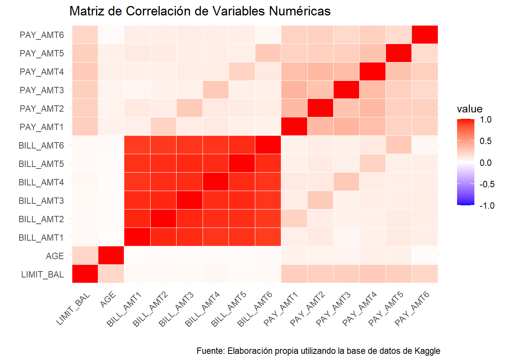
Agregamos la misma matriz, pero esta vez indicando los índices de correlación, para visualizar de manera gráfica y matemática la correlación existente.
library(dplyr)library(ggplot2)library(reshape2)# Crear la matriz de correlaciónmatriz_correlacion <-cor(data_credit_numerico, use ="complete.obs")# Creamos la variable para ver la matriz de correlación como un gráfico de calorbase_matriz <-melt(matriz_correlacion)# Hacemos el plot de la base ggplot(base_matriz, aes(Var1, Var2, fill = value)) +geom_tile(color ="white") +scale_fill_gradient2(low ="blue", high ="red", mid ="white", midpoint =0, limit =c(-1, 1), space ="Lab") +theme_minimal() +geom_text(aes(label =round(value, 2)), color ="black", size =3) +labs(title ="Matriz de Correlación de Variables Numéricas",x ="", y ="") +labs(caption ="Fuente: Elaboración propia utilizando la base de datos de Kaggle") +theme(axis.text.x =element_text(angle =45, hjust =1))
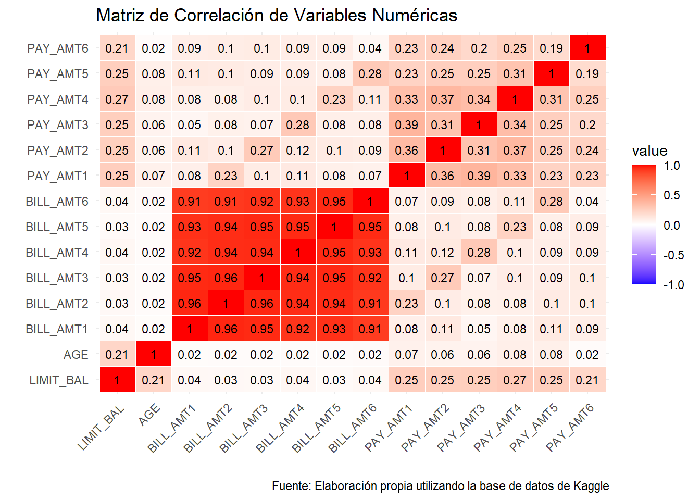
Figura 1: Matriz de Correlación
3.1.2.2 Gráficos relacionados a la Base de Datos
3.1.2.2.1 Gráficos de Variables Numéricas
Vamos a realizar algunos gráficos de la base, con el fin de observar cómo se comportan los datos, para ello, primero veamos algunos histogramas, recordemos que los histogramas están hechos para variables numéricas, por lo que trataremos de ir en orden a la hora de gráficarlas.
Damos inicio con la variable de “LIMIT_BAL”, la cual se refiere al crédito otorgado.
library(ggplot2)library(dplyr)data_credit %>%ggplot(aes(x = LIMIT_BAL)) +geom_histogram(binwidth =50000, fill ="steelblue", color ="black", alpha =0.7) +geom_vline(aes(xintercept =mean(LIMIT_BAL)), linetype ="dashed", color ="red", size =1) +# Línea punteada de la medialabs(title ="Histograma de la Cantidad de Crédito Otorgado",x ="Crédito Otorgado",y ="Frecuencia") +labs(caption ="Fuente: Elaboración propia utilizando la base de datos de Kaggle") +theme_minimal()
Warning: Using `size` aesthetic for lines was deprecated in ggplot2 3.4.0.
ℹ Please use `linewidth` instead.
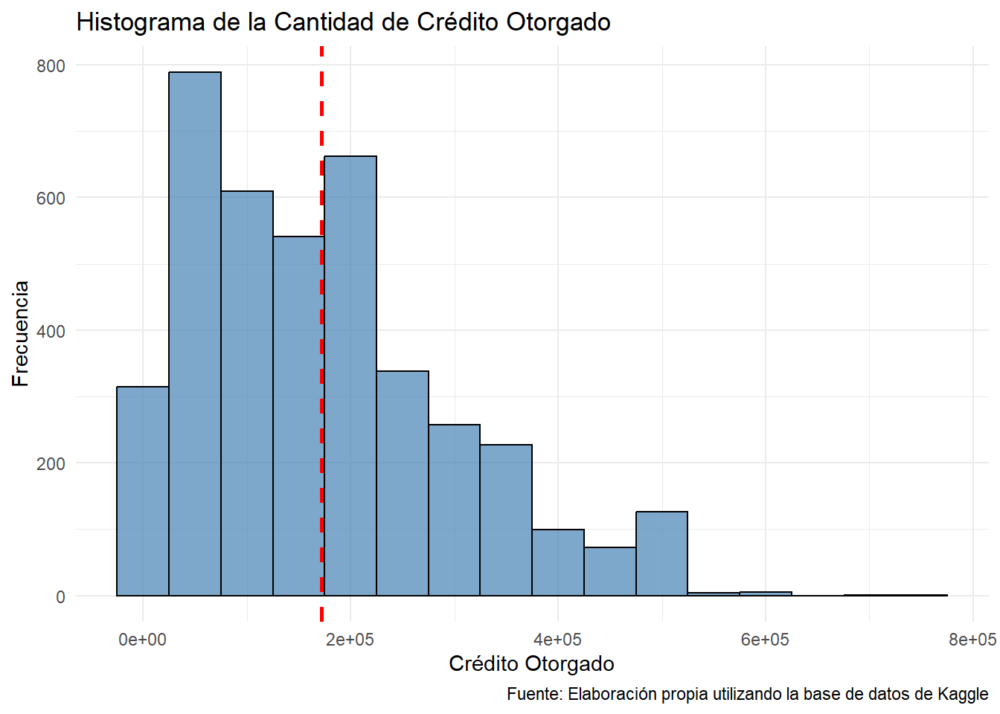
Agregamos un gráfico adicional, donde podemos observar como se comporta la densidad de esta variable.
library(ggplot2)library(dplyr)data_credit %>%ggplot(aes(x = LIMIT_BAL)) +geom_histogram(aes(y =after_stat(density)), binwidth =50000, fill ="steelblue", color ="black", alpha =0.7) +geom_density(color ="red", size =1) +# Densidad en línea rojageom_vline(aes(xintercept =mean(LIMIT_BAL)), linetype ="dashed", color ="black", size =1) +# Línea punteada de la medialabs(title ="Histograma y Densidad de la Cantidad de Crédito Otorgado",x ="Crédito Otorgado",y ="Densidad") +labs(caption ="Fuente: Elaboración propia utilizando la base de datos de Kaggle") +theme_minimal()
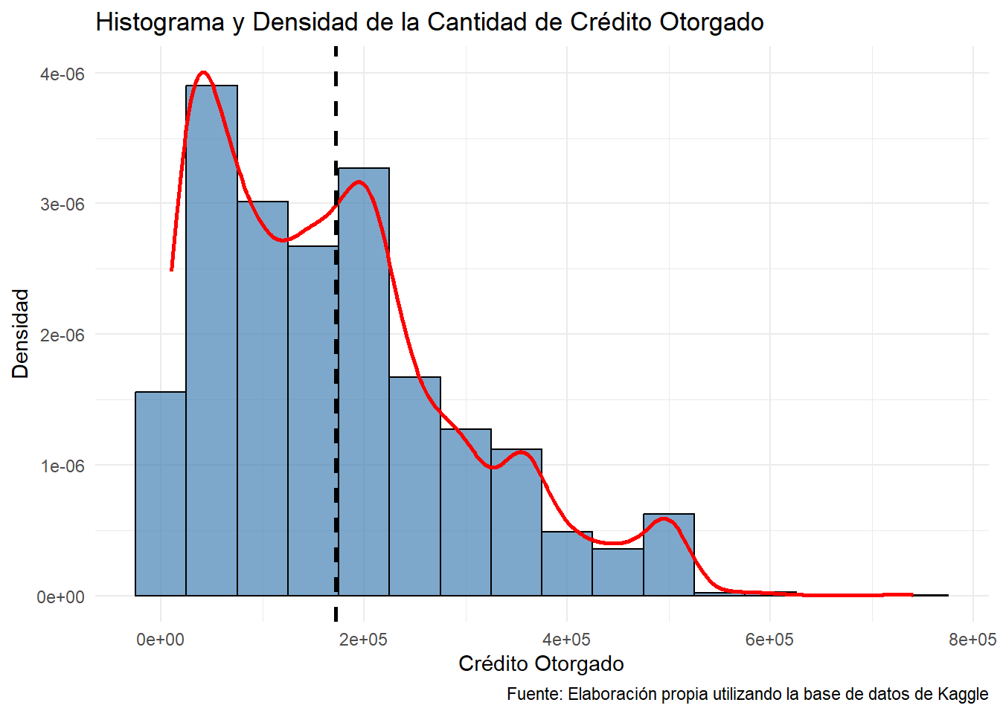
Procedemos ahora con la variable de la edad, esto porque queremos visualizar la distribución de las edades de nuestro data set.
library(ggplot2)library(dplyr)data_credit %>%ggplot(aes(x = AGE)) +geom_histogram(binwidth =1, fill ="steelblue", color ="black", alpha =0.7) +geom_vline(aes(xintercept =mean(AGE, na.rm =TRUE)), color ="red", linetype ="dashed", size =1) +labs(title ="Histograma de las edades por sexo.",x ="Edades",y ="Frecuencia") +labs(caption ="Fuente: Elaboración propia utilizando la base de datos de Kaggle") +facet_wrap(~SEX, labeller =as_labeller(c("1"="Hombre", "2"="Mujer"))) +theme_minimal()
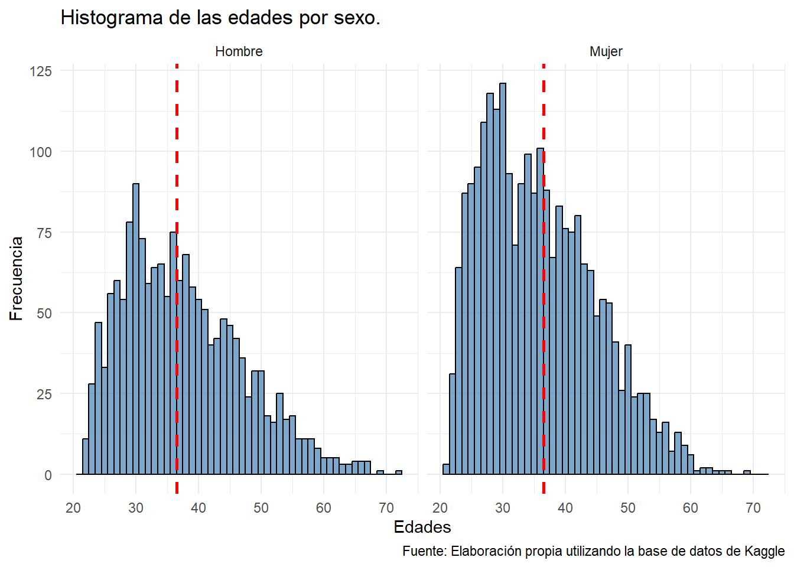
Agregamos un gráfico adicional donde podemos observar la densidad de la variable.
library(ggplot2)library(dplyr)data_credit %>%ggplot(aes(x = AGE)) +geom_histogram(aes(y =after_stat(density)), binwidth =1, fill ="steelblue", color ="black", alpha =0.7) +geom_density(aes(y =after_stat(density)), color ="red", size =1) +# Curva de densidad en verdegeom_vline(aes(xintercept =mean(AGE, na.rm =TRUE)), color ="black", linetype ="dashed", size =1) +# Línea roja punteadalabs(title ="Histograma de las edades por sexo.",x ="Edades",y ="Frecuencia") +facet_wrap(~SEX, labeller =as_labeller(c("1"="Hombre", "2"="Mujer"))) +labs(caption ="Fuente: Elaboración propia utilizando la base de datos de Kaggle") +theme_minimal()
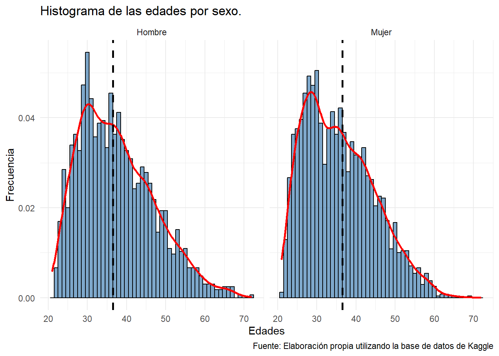
Con estas dos variables es sufiente de gráficos aislados, debido a la naturaleza de las demás variables numéricas que tenemos en el dataset, en vez de eso, vamos a ver cómo se comportan los gráficos, cuando se plotean las relaciones entre ellos.
library(ggplot2)library(dplyr)data_credit %>%ggplot(aes(x = AGE)) +geom_histogram(binwidth =1, fill ="steelblue", color ="black", alpha =0.7) +geom_vline(aes(xintercept =mean(AGE, na.rm =TRUE)), color ="red", linetype ="dashed", size =1) +labs(title ="Histograma de las edades por nivel educativo.",x ="Edades",y ="Frecuencia") +facet_wrap(~EDUCATION, labeller =labeller(EDUCATION =c("1"="Posgrado", "2"="Universidad", "3"="Secundaria", "4"="Otros", "5"="Desconocido", "6"="Desconocido" ))) +labs(caption ="Fuente: Elaboración propia utilizando la base de datos de Kaggle") +theme_minimal()
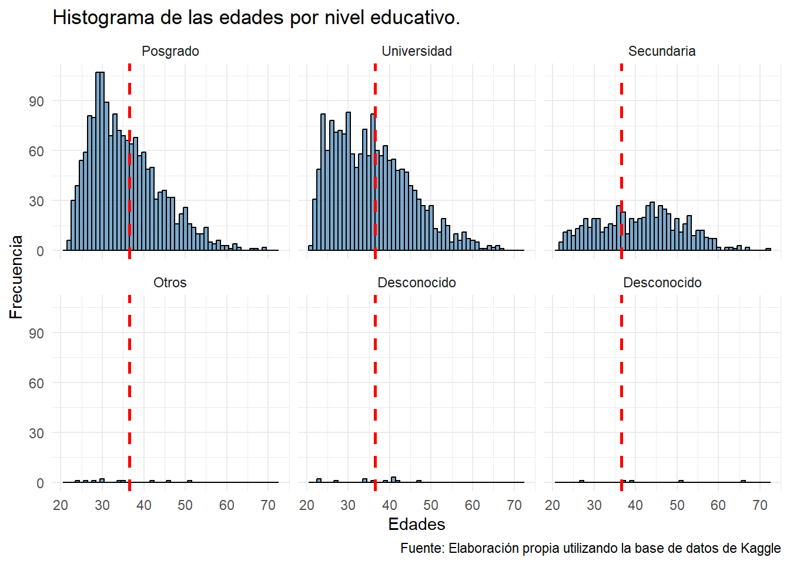
Gracias a este gráfico, podemos observar que la gran mayoría de los datos se encuentran en los subvariables de Universidad. Secundaria y Posgrado.
Ahora veamos como se distribuye la edad, con respecto a la variable de Estado Civil.
library(ggplot2)library(dplyr)data_credit %>%ggplot(aes(x = AGE)) +geom_histogram(binwidth =1, fill ="steelblue", color ="black", alpha =0.7) +geom_vline(aes(xintercept =mean(AGE, na.rm =TRUE)), color ="red", linetype ="dashed", size =1) +# Línea roja punteada para la medialabs(title ="Histograma de las edades facet por Marriage",x ="Edades",y ="Frecuencia") +facet_wrap(~MARRIAGE, labeller =as_labeller(c("1"="Casado", "2"="Soltero", "3"="Otros"))) +labs(caption ="Fuente: Elaboración propia utilizando la base de datos de Kaggle") +theme_minimal()
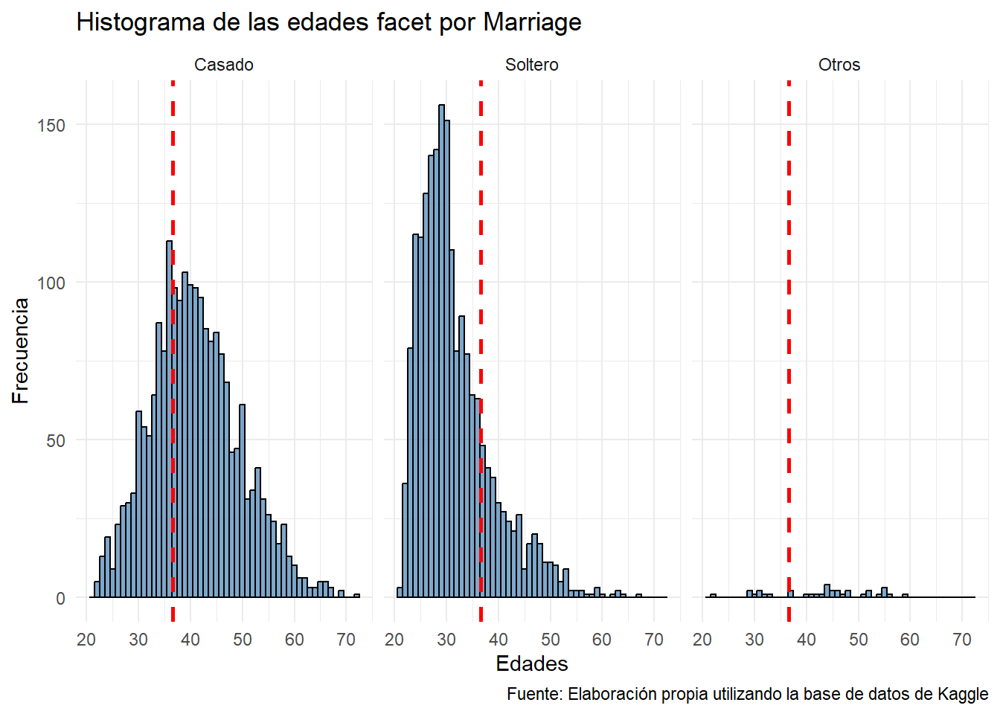
Conjeturando, podemos ver que la distribución de las edades de las personas que están casadas, sigue más o menos una distribución normal, mientras que las personas que están solteras lo hace como una distribución exponencial.
Por último nos interesa saber cómo se distribuyen las edades en relación a la variable de impago, que es la que tiene el principal peso de dicho estudio.
library(ggplot2)library(dplyr)data_credit %>%ggplot(aes(x = AGE)) +geom_histogram(binwidth =1, fill ="steelblue", color ="black", alpha =0.7) +geom_vline(aes(xintercept =mean(AGE, na.rm =TRUE)), color ="red", linetype ="dashed", size =1) +labs(title ="Histograma de las edades facet por Impago",x ="Edades",y ="Frecuencia") +facet_wrap(~default.payment.next.month, labeller =as_labeller(c("0"="A tiempo", "1"="Impago"))) +labs(caption ="Fuente: Elaboración propia utilizando la base de datos de Kaggle") +theme_minimal()
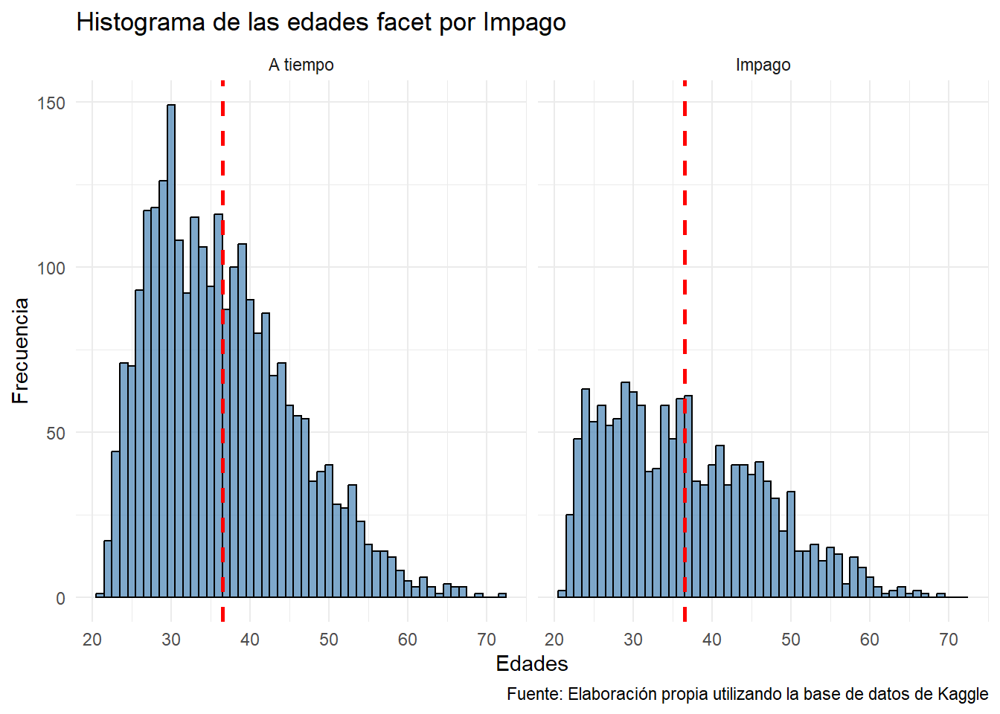
Vamos a realizar las mismas gráficas, pero esta vez con la la variable de LIMIT_BAL, para observar su comportamiento.
library(ggplot2)library(dplyr)data_credit %>%ggplot(aes(x = LIMIT_BAL)) +geom_histogram(binwidth =50000, fill ="steelblue", color ="black", alpha =0.7) +geom_vline(aes(xintercept =mean(LIMIT_BAL, na.rm =TRUE)), color ="red", linetype ="dashed", size =1) +labs(title ="Histograma de los límites de crédito por nivel educativo.",x ="Límite de Crédito",y ="Frecuencia") +facet_wrap(~EDUCATION, labeller =labeller(EDUCATION =c("1"="Posgrado", "2"="Universidad", "3"="Secundaria", "4"="Otros", "5"="Desconocido", "6"="Desconocido" ))) +labs(caption ="Fuente: Elaboración propia utilizando la base de datos de Kaggle") +theme_minimal()
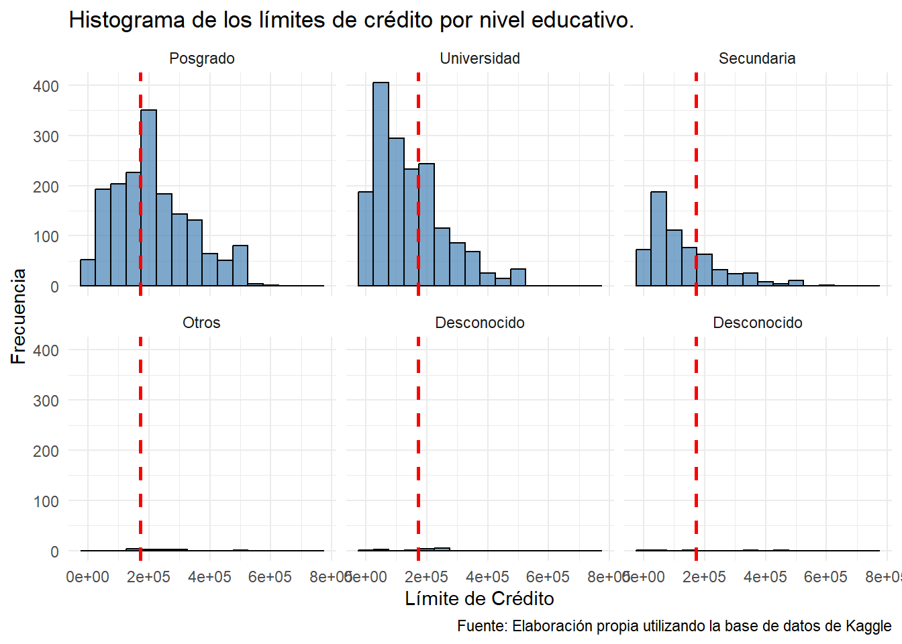
Agregamos también un gráfico de densidades, esto con el objetivo de ver la distribución.
library(ggplot2)library(dplyr)library(ggridges)data_credit %>%ggplot(aes(x = LIMIT_BAL, y =as.factor(EDUCATION), fill =as.factor(EDUCATION), color =as.factor(EDUCATION))) +geom_density_ridges(alpha =0.5) +labs(title ="Densidad de los límites de crédito por nivel educativo.",x ="Límite de Crédito",y ="Nivel Educativo") +scale_fill_manual(values =c("1"="steelblue", "2"="lightblue", "3"="lightgreen", "4"="lightyellow", "5"="lightcoral", "6"="lightsalmon")) +scale_color_manual(values =c("1"="blue", "2"="darkblue", "3"="darkgreen", "4"="darkorange", "5"="darkred", "6"="salmon")) +scale_y_discrete(labels =c("1"="Posgrado", "2"="Universidad", "3"="Secundaria", "4"="Otros", "5"="Desconocido", "6"="Desconocido" )) +labs(caption ="Fuente: Elaboración propia utilizando la base de datos de Kaggle") +theme_minimal()
Picking joint bandwidth of 49800
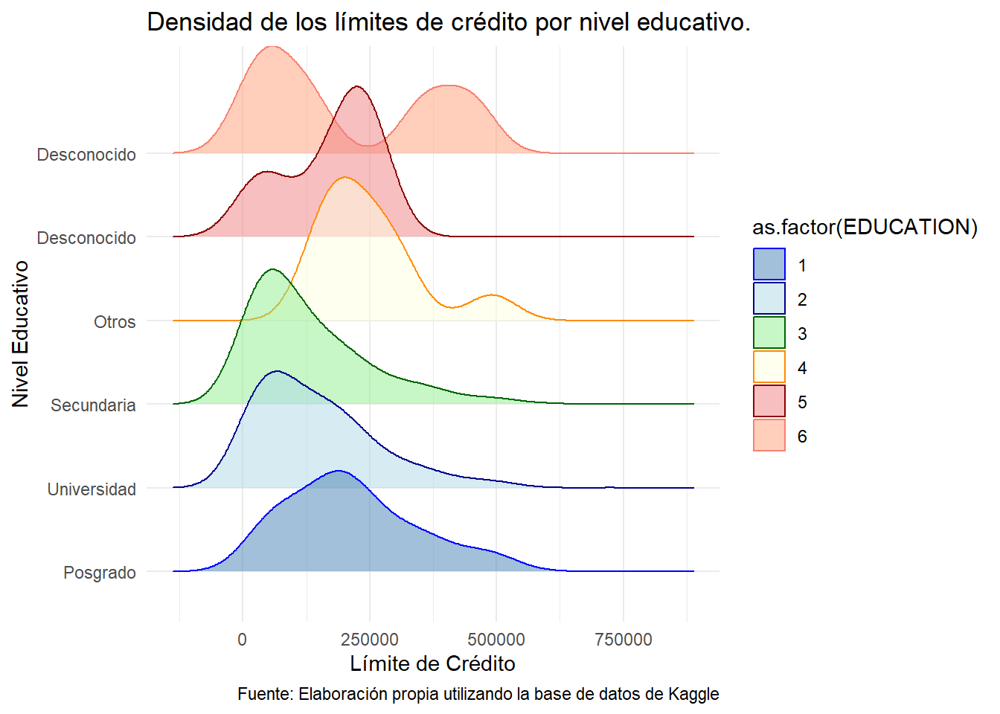
Las densidades que deben llamar nuestra atención son la de Secundaria, Universidad y Posgrado, esto por el hecho de que ellas son las que tienen la mayor concentración de datos.Además, veamos que las densidades tienen más o menos una distribución exponencial.
Por otro lado, observemos las densidades del límite de crédito con respecto al género.
library(ggplot2)ggplot(data_credit, aes(x = LIMIT_BAL, fill =as.factor(SEX))) +geom_density(adjust =2, alpha =0.5) +labs(x ="Monto del crédito (NT$)",y ="Densidad",title ="Distribución de montos de crédito por género",fill ="Género" ) +scale_fill_manual(values =c("1"="blue", "2"="pink")) +labs(caption ="Fuente: Elaboración propia utilizando la base de datos de Kaggle") +theme_minimal()
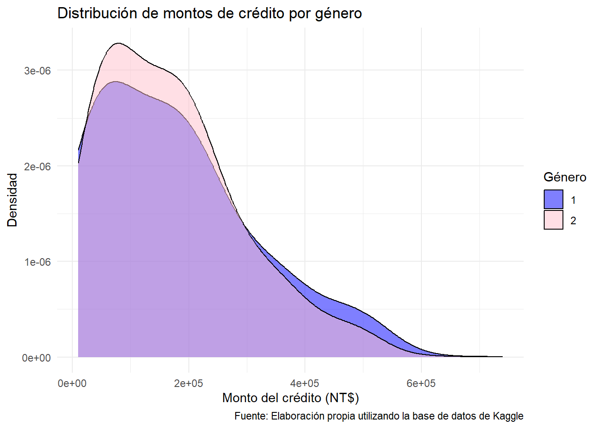
Del gráfico anterior, podemos determinar que a menores montos las mujeres tienen más crédito.
El siguiente gráfico es un histograma del límite de crédito con respecto al estado civil de las personas.
library(ggplot2)library(dplyr)data_credit %>%ggplot(aes(x = LIMIT_BAL)) +geom_histogram(binwidth =50000, fill ="steelblue", color ="black", alpha =0.7) +geom_vline(aes(xintercept =mean(LIMIT_BAL, na.rm =TRUE)), color ="red", linetype ="dashed", size =1) +labs(title ="Histograma de los límites de crédito facet por estado civil",x ="Límite de Crédito",y ="Frecuencia") +facet_wrap(~MARRIAGE, labeller =as_labeller(c("1"="Casado", "2"="Soltero", "3"="Otros"))) +labs(caption ="Fuente: Elaboración propia utilizando la base de datos de Kaggle") +theme_minimal()
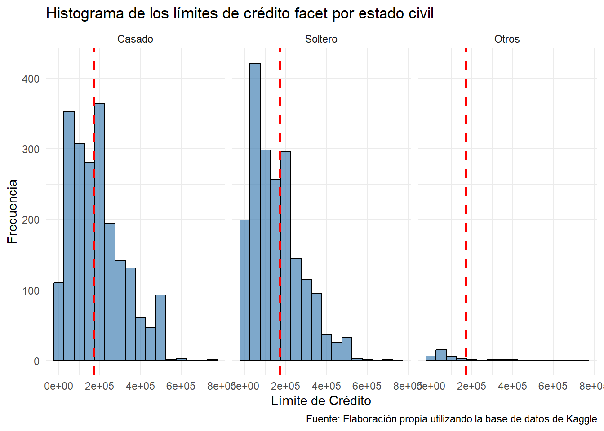
Agregamos densidades de las respectivas variables.
library(ggplot2)library(dplyr)library(ggridges)data_credit %>%ggplot(aes(x = LIMIT_BAL, y =as.factor(MARRIAGE), fill =as.factor(MARRIAGE), color =as.factor(MARRIAGE))) +geom_density_ridges(alpha =0.5) +labs(title ="Densidad de los límites de crédito por estado civil.",x ="Límite de Crédito",y ="Estado Civil") +scale_fill_manual(values =c("1"="steelblue", "2"="lightblue", "3"="lightgreen")) +scale_color_manual(values =c("1"="blue", "2"="darkblue", "3"="darkgreen")) +scale_y_discrete(labels =c("1"="Casado", "2"="Soltero", "3"="Otros" )) +labs(caption ="Fuente: Elaboración propia utilizando la base de datos de Kaggle") +theme_minimal()
Picking joint bandwidth of 26300
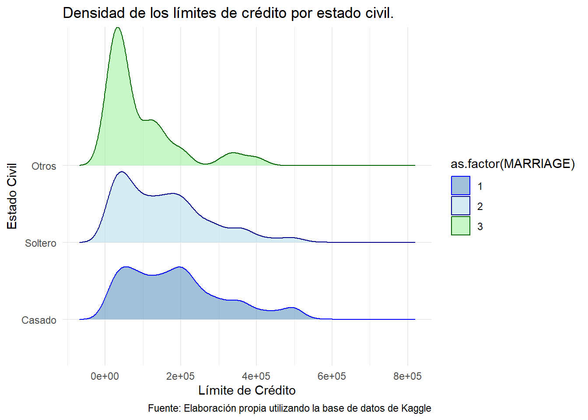
library(ggplot2)library(dplyr)data_credit %>%ggplot(aes(x = LIMIT_BAL)) +geom_histogram(binwidth =50000, fill ="steelblue", color ="black", alpha =0.7) +geom_vline(aes(xintercept =mean(LIMIT_BAL, na.rm =TRUE)), color ="red", linetype ="dashed", size =1) +labs(title ="Histograma de los límites de crédito facet por Impago",x ="Límite de Crédito",y ="Frecuencia") +facet_wrap(~default.payment.next.month, labeller =as_labeller(c("0"="A tiempo", "1"="Impago"))) +labs(caption ="Fuente: Elaboración propia utilizando la base de datos de Kaggle") +theme_minimal()
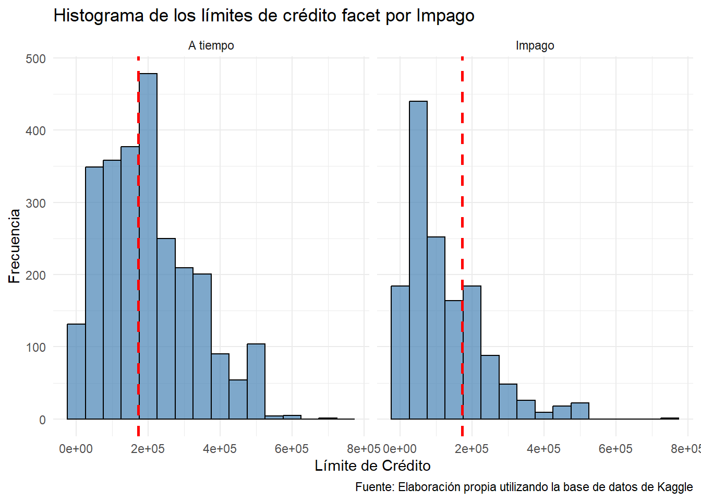
Agregamos dicho gráfico de densidades para las anteriores variables.
library(ggplot2)library(dplyr)library(ggridges)data_credit %>%ggplot(aes(x = LIMIT_BAL, y =as.factor(default.payment.next.month), fill =as.factor(default.payment.next.month), color =as.factor(default.payment.next.month))) +geom_density_ridges(alpha =0.5) +labs(title ="Densidad de los límites de crédito por estado de impago.",x ="Límite de Crédito",y ="Estado de Impago") +scale_fill_manual(values =c("0"="steelblue", "1"="lightcoral")) +scale_color_manual(values =c("0"="blue", "1"="darkred")) +scale_y_discrete(labels =c("0"="A tiempo", "1"="Impago" )) +labs(caption ="Fuente: Elaboración propia utilizando la base de datos de Kaggle") +theme_minimal()
Picking joint bandwidth of 22100
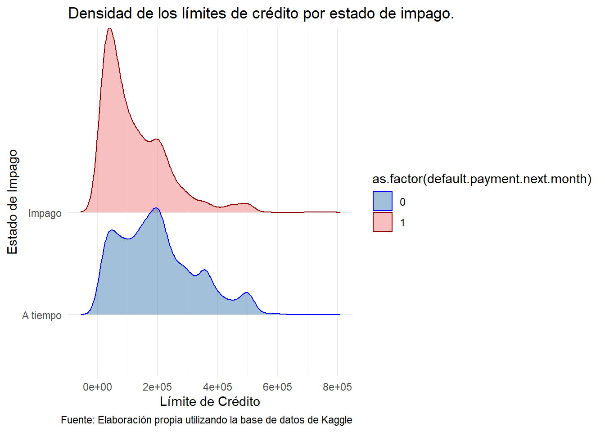
Ploteando los gráficos juntos, para una mejor visualización tenemos que:
ggplot(data_credit, aes(x = LIMIT_BAL, fill =as.factor(default.payment.next.month))) +geom_density(alpha =0.6) +labs(x ="Monto del crédito (NT$)",y ="Densidad",title ="Distribución de Monto de Crédito por Impago",fill ="Impago" ) +scale_fill_manual(values =c("0"="steelblue", "1"="lightcoral")) +labs(caption ="Fuente: Elaboración propia utilizando la base de datos de Kaggle") +theme_minimal()
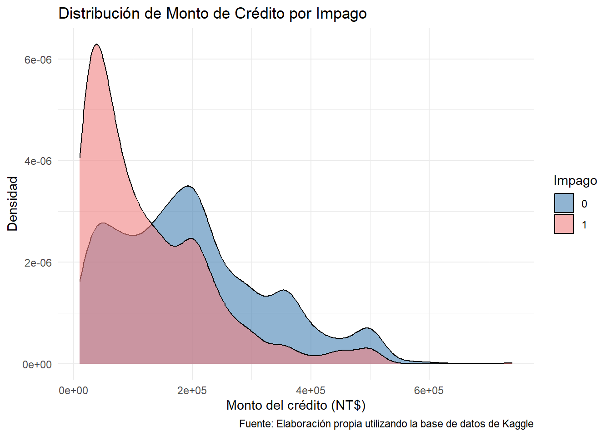
Utilizando una gráfica de violín, veamos la distribución para compararlas visualmente.
ggplot(data_credit, aes(x =as.factor(default.payment.next.month), y = LIMIT_BAL, fill =as.factor(default.payment.next.month))) +geom_violin() +labs(title ="Distribución del Límite de Crédito por Estado de Impago", x ="Estado de Impago", y ="Límite de Crédito") +scale_fill_manual(values =c("0"="steelblue", "1"="lightcoral")) +labs(caption ="Fuente: Elaboración propia utilizando la base de datos de Kaggle") +theme_minimal()
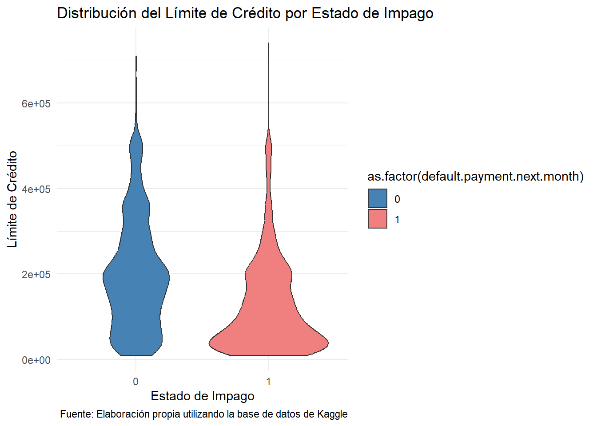
Por el gráfico de la izquierda, podemos observar como a menores límite de créditos hay una concentración de las personas que caen en impago, reduciendose conforme el límite de crédito es mayor. Note además que un gráfico de violín al final son las densidades reflejadas, podemos obtener la misma información de un gráfico de violín que de un gráfico de densidades.
luego utilizando un diagrama de cajas para hacer otra comparación.
library(ggplot2)ggplot(data_credit, aes(x =as.factor(default.payment.next.month), y = LIMIT_BAL, fill =as.factor(default.payment.next.month))) +geom_boxplot(alpha =0.6) +labs(x ="Impago",y ="Monto del crédito (NT$)",title ="Distribución del Monto de Crédito según Impago",fill ="Impago" ) +scale_fill_manual(values =c("0"="steelblue", "1"="lightcoral")) +labs(caption ="Fuente: Elaboración propia utilizando la base de datos de Kaggle") +theme_minimal()
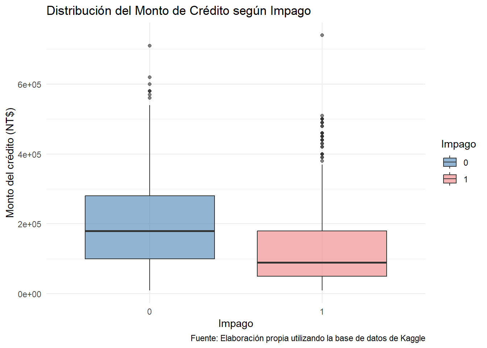
Del gráfico anterior entonces podemos observar que en promedio las personas que pagan a tiempo según el monto de crédito es mayor que el de las personas que cae en impago, lo cual nos ayudará a determinar más adelante si este factor es de importancia a la hora del riesgo de pago.
Por último veamos cómo de distribuyen las variables AGE y LIMIT_BAL. Usaremos un gráfico de dispersión
library(ggplot2)ggplot(data_credit, aes(x = AGE, y = LIMIT_BAL)) +geom_point(color ="steelblue", alpha =0.7) +geom_smooth(method ="lm", color ="red", se =FALSE) +labs(title ="Gráfico de dispersión entre Edad y Límite de Crédito con regresión lineal",x ="Edad",y ="Límite de Crédito") +labs(caption ="Fuente: Elaboración propia utilizando la base de datos de Kaggle") +theme_minimal()
`geom_smooth()` using formula = 'y ~ x'
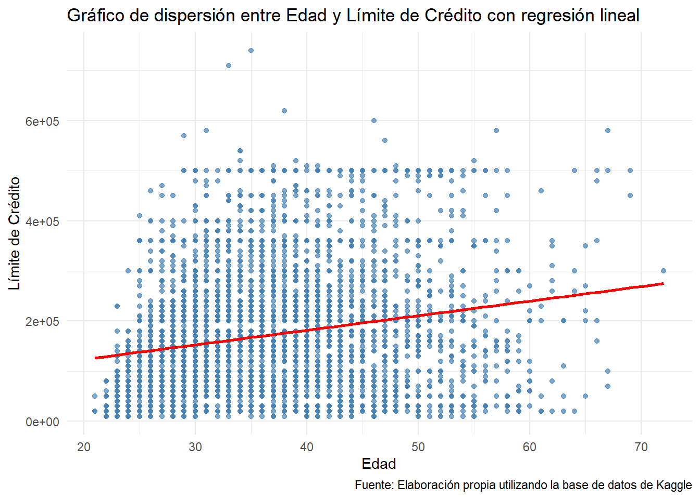
Cuando realizamos la matriz de correlación, vimos que la correlación entre estas dos variables es de 0.21, lo cual es algo bajo, podemos entonces ver esa tendencia en este gráfico, pues tenemos muchos puntos dispersos, al realizar una regresión lineal, podemos ver la linea que mejor se ajusta a estos puntos. Podemos inferir que hay una relación positiva débil entre las variables. Aunque un valor de 0.21 no ayuda a predecir qué pasaría cuando las variables aumenten.
3.1.2.2.2 Gráficos de Variables Categóricas.
Comenzaremos esta sección realizando gráficos de barras, con la intención de ver las frecuencias de las variables.
library(ggplot2)ggplot(data = data_credit, aes(x =as.factor(SEX))) +geom_bar(fill ="skyblue", color ="black") +labs(title ="Distribución de la variable Sexo", x ="Sexo", y ="Frecuencia") +scale_x_discrete(labels =c("1"="Hombre", "2"="Mujer")) +labs(caption ="Fuente: Elaboración propia utilizando la base de datos de Kaggle") +theme_minimal()
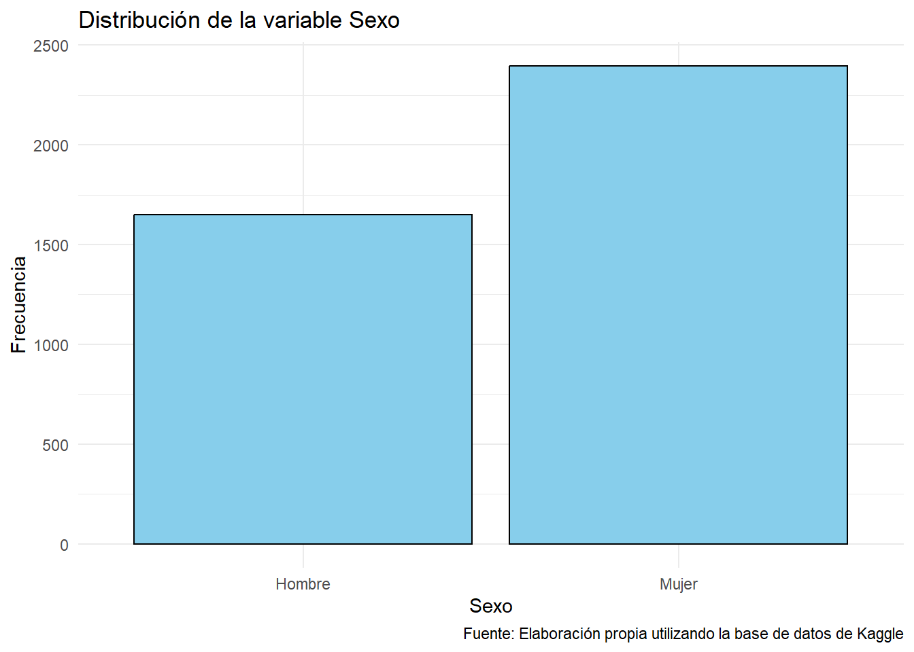
Con esto podemos ver que tenemos más datos de mujeres que de hombres.
Veamos como se comporta la variable de educación.
library(ggplot2)ggplot(data = data_credit, aes(x =as.factor(EDUCATION))) +geom_bar(fill ="skyblue", color ="black") +labs(title ="Distribución del Nivel Educativo", x ="Nivel Educativo", y ="Frecuencia") +scale_x_discrete(labels =c("1"="Posgrado", "2"="Universidad", "3"="Secundaria", "4"="Otros", "5"="Desconocido", "6"="Desconocido")) +labs(caption ="Fuente: Elaboración propia utilizando la base de datos de Kaggle") +theme_minimal()
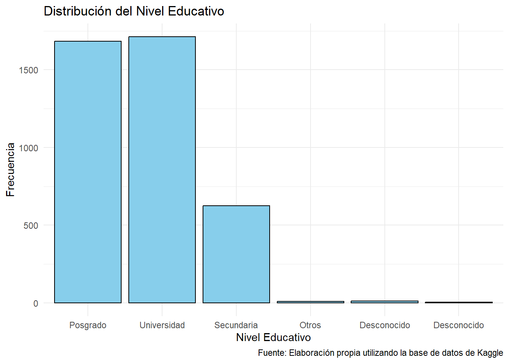
Observamos entonces que nuestra base de datos contiene más información de personas que están posgrados o que terminaron la universidad.
Luego para la variable de estado civil.
library(ggplot2)ggplot(data = data_credit, aes(x =as.factor(MARRIAGE))) +geom_bar(fill ="skyblue", color ="black") +labs(title ="Distribución del Estado Civil", x ="Estado Civil", y ="Frecuencia") +scale_x_discrete(labels =c("1"="Casado", "2"="Soltero", "3"="Otros")) +labs(caption ="Fuente: Elaboración propia utilizando la base de datos de Kaggle") +theme_minimal()
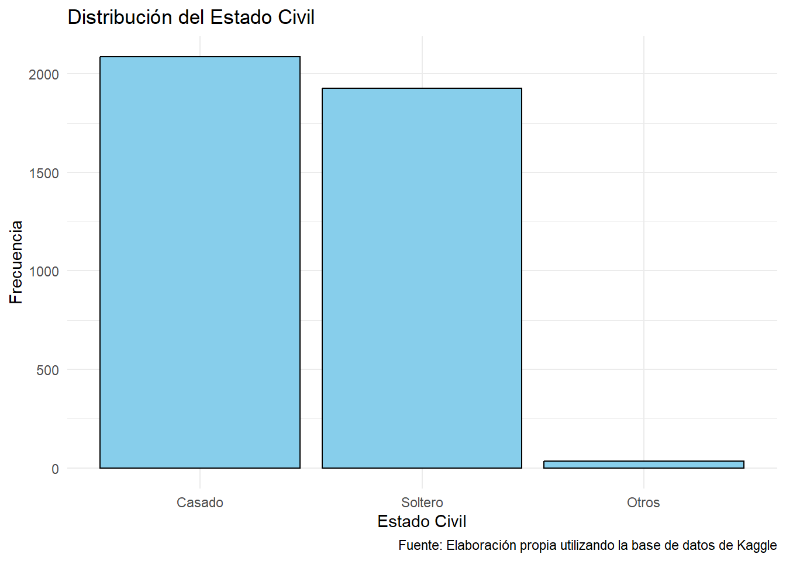
Al igual que antes, tenemos más información de las personas que están casadas y de las que están solteras.
Por último vamos a ver la gráfica de barras de la variable de interés, la cual es si cayó en impago o no lo hizo.
library(ggplot2)ggplot(data = data_credit, aes(x =as.factor(default.payment.next.month))) +geom_bar(fill ="skyblue", color ="black") +labs(title ="Distribución de Impagos", x ="Impago", y ="Frecuencia") +scale_x_discrete(labels =c("0"="A tiempo", "1"="Impago")) +labs(caption ="Fuente: Elaboración propia utilizando la base de datos de Kaggle") +theme_minimal()
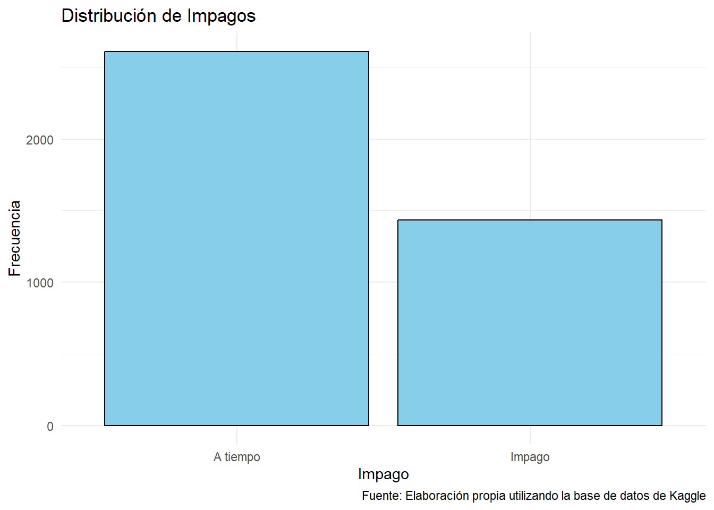
Con esto terminamos los gráficos aislados de las variables categóricas y damos inicio a ver cómo se distribuyen cuando las relacionamos.
library(ggplot2)library(dplyr)ggplot(data = data_credit, aes(x =as.factor(default.payment.next.month), fill =as.factor(SEX))) +geom_bar(position ="fill", color ="black") +labs(title ="Proporción de Hombres y Mujeres en Impago vs Pago a Tiempo", x ="Estado de Pago", y ="Proporción") +scale_x_discrete(labels =c("0"="A tiempo", "1"="Impago")) +scale_fill_manual(labels =c("1"="Hombre", "2"="Mujer"), values =c("skyblue", "lightcoral")) +theme_minimal() +labs(caption ="Fuente: Elaboración propia utilizando la base de datos de Kaggle") +theme(legend.title =element_blank())
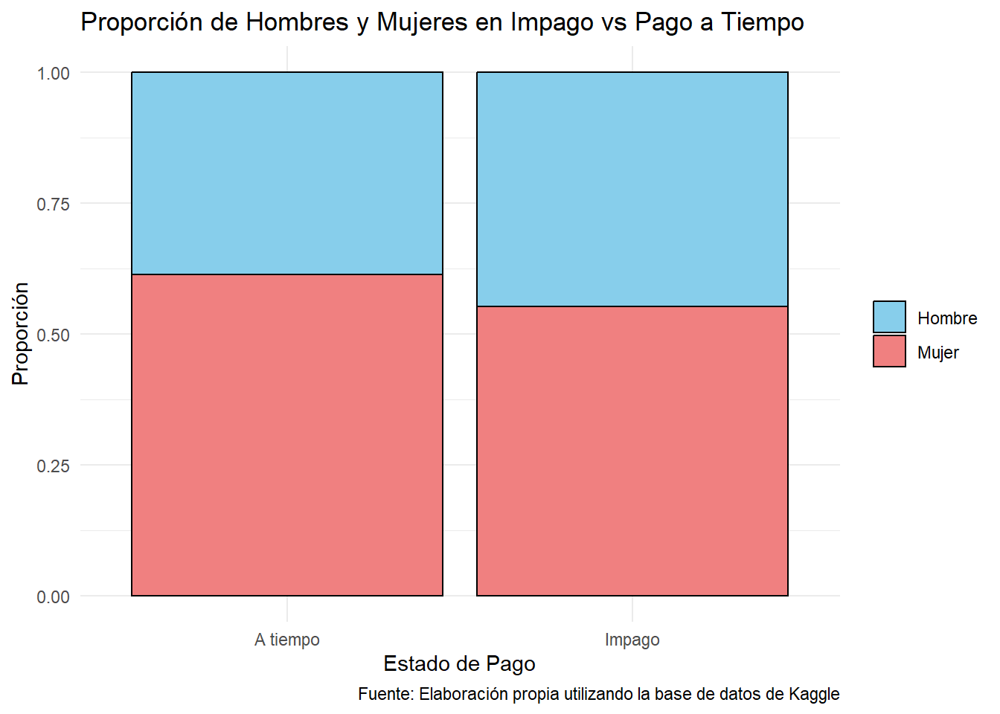
Del gráfico anterior, podemos observar entonces que de las personas que cayeron en impago, la mayoría son mujeres, al menos más del 50%, sin embargo, veamos de manera aislada esto.
library(ggplot2)library(dplyr)data_credit %>%filter(SEX ==2) %>%ggplot(aes(x =as.factor(default.payment.next.month), fill =as.factor(default.payment.next.month))) +geom_bar(stat ="count", color ="black") +labs(title ="Distribución de Impago entre Mujeres",x ="Impago",y ="Frecuencia",fill ="Impago") +scale_x_discrete(labels =c("0"="A tiempo", "1"="Impago")) +scale_fill_manual(values =c("0"="steelblue", "1"="tomato")) +theme_minimal() +labs(caption ="Fuente: Elaboración propia utilizando la base de datos de Kaggle") +theme(legend.position ="none")
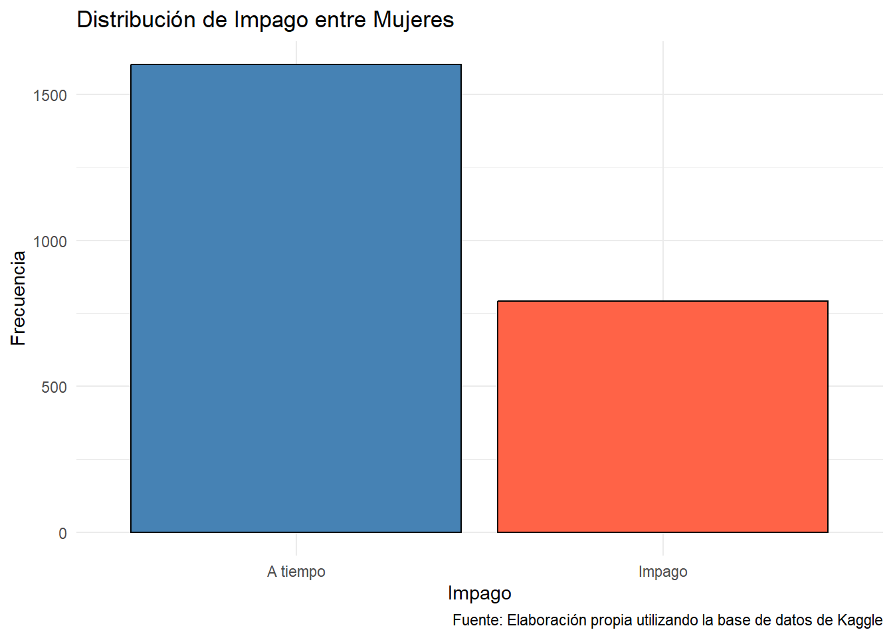
Numéricamente esto es:
library(dplyr)mujeres_impago <- data_credit %>%filter(SEX ==2) %>%# Filtramos los datos, porque nos interesan solo las mujeressummarise(total_mujeres =n(), mujeres_impago =sum(default.payment.next.month ==1) # Número de mujeres en impago ) %>%mutate(porcentaje_impago = mujeres_impago / total_mujeres *100) # Calculamos el porcentaje de las mujeres que cayeron en impago.# Mostramos el resultadomujeres_impago
Con esto podemos observar que de las mujeres totales, solo el 33% cayó en impago. Haremos un análisis similar con respecto a los hombre.
library(ggplot2)library(dplyr)data_credit %>%filter(SEX ==1) %>%ggplot(aes(x =as.factor(default.payment.next.month), fill =as.factor(default.payment.next.month))) +geom_bar(stat ="count", color ="black") +labs(title ="Distribución de Impago entre Hombres",x ="Impago",y ="Frecuencia",fill ="Impago") +scale_x_discrete(labels =c("0"="A tiempo", "1"="Impago")) +scale_fill_manual(values =c("0"="steelblue", "1"="tomato")) +theme_minimal() +labs(caption ="Fuente: Elaboración propia utilizando la base de datos de Kaggle") +theme(legend.position ="none")
Con esto observamos que el porcentaje de los hombres que cayeron en impago, aunque es por poco, es mayor que el de las mujeres que cayeron en impago. Esto lo hicimos porque anteriormente se estaban comparando magnitudes que no se podían comparar, con los porcentajes podemos determinar que relativamente, los hombres tienden a caer más en impago que las mujeres, al menos eso podemos inferrir gracias a la evidencia de los datos.
Ahora vamos a visualizar el crédito con respecto a la variable de MARRIAGE.
library(ggplot2)ggplot(data_credit, aes(x =as.factor(MARRIAGE), y = LIMIT_BAL, color =as.factor(MARRIAGE))) +geom_jitter() +labs(title ="Límite de Crédito por Estado Civil", x ="Estado Civil", y ="Límite de Crédito") +labs(caption ="Fuente: Elaboración propia utilizando la base de datos de Kaggle") +theme_minimal()
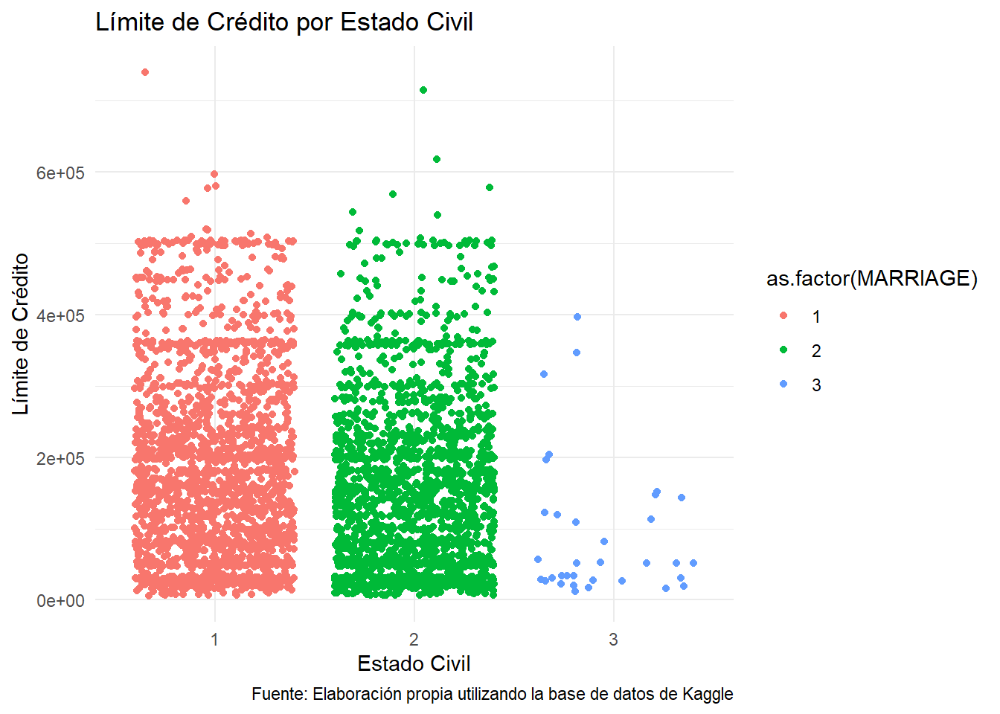
Después analizaremos la relación entre las variables, ya que son variables de diferente naturaleza, es decir una categórica y una numérica, por lo que utilizaremos un análisis ANOVA para clarificar si las diferencias se deben al azar o si la evidencia estadística indican que están relacionados. Por el momento, haremos una comparación con gráficos de cajas, para observar de manera gráfica, como se siguen comportando.
library(ggplot2)ggplot(data_credit, aes(x =as.factor(MARRIAGE), y = LIMIT_BAL, fill =as.factor(MARRIAGE))) +geom_boxplot() +labs(title ="Límite de Crédito por Estado Civil", x ="Estado Civil", y ="Límite de Crédito") +labs(caption ="Fuente: Elaboración propia utilizando la base de datos de Kaggle") +theme_minimal()
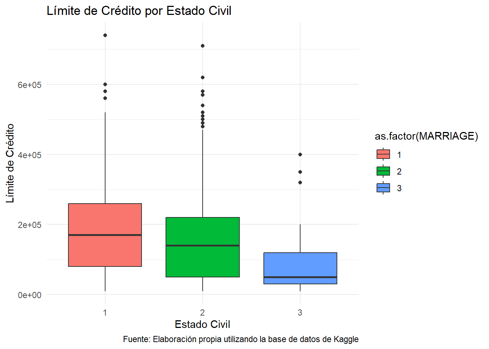
Podemos observar gráficamente que las diferencias no son tan significativas, sin embargo esto es una conjetura, nos ajustaremos a un análisis estadístico más riguroso en posteriores secciones. Por otro lado, podemos observar que el nivel 3 difiere de los otros niveles, esto se puede deber a las bajas observaciones que tenemos en este nivel.
Por último para tener la relación entre estas variables, observemos el siguiente gráfico.
library(ggplot2)ggplot(data_credit, aes(x = LIMIT_BAL, fill =as.factor(MARRIAGE))) +geom_histogram(binwidth =50000) +facet_wrap(~MARRIAGE, nrow =3) +labs(x ="Monto del crédito otorgado (NT dólares)",y ="Frecuencia",title ="Distribución de montos de crédito por estado civil",fill ="Estado civil" ) +scale_fill_manual(values =c("1"="salmon", "2"="green", "3"="skyblue")) +theme_minimal() +labs(caption ="Fuente: Elaboración propia utilizando la base de datos de Kaggle") +theme(legend.position ="none")
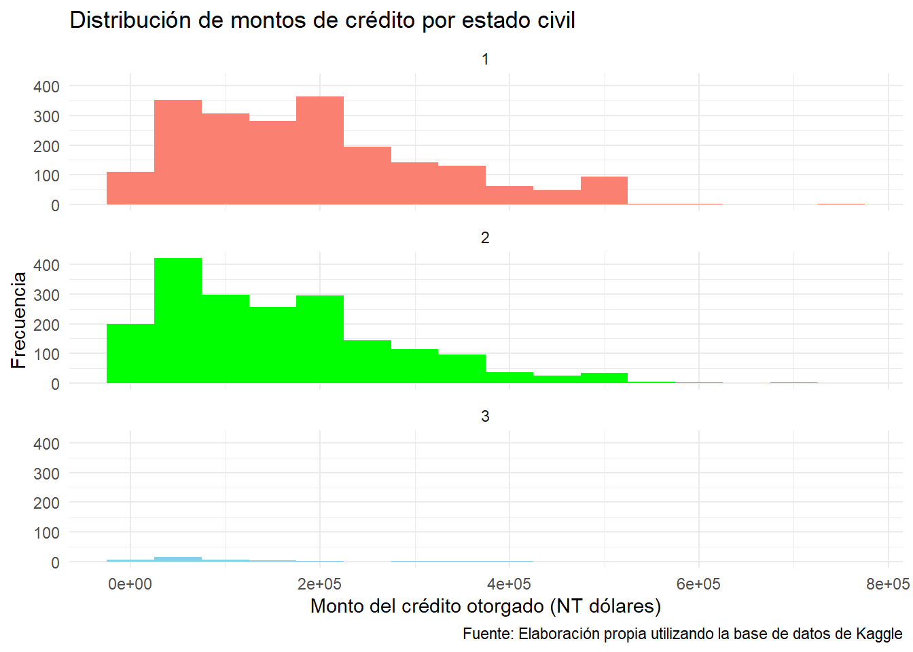
Como hemos mencionado, la distribución de las variables casado y soltero se parecen mucho visualmente, no podemos decir más del estado “otro”.
Analizamos ahora la frecuencia de impago en relación con el nivel educativo.
ggplot(data_credit, aes(x =as.factor(EDUCATION), fill =as.factor(default.payment.next.month))) +geom_bar(position ="dodge") +labs(title ="Frecuencia de Impago por Nivel Educativo", x ="Nivel Educativo", y ="Frecuencia") +scale_fill_manual(values =c("0"="steelblue", "1"="lightcoral")) +labs(caption ="Fuente: Elaboración propia utilizando la base de datos de Kaggle") +theme_minimal()
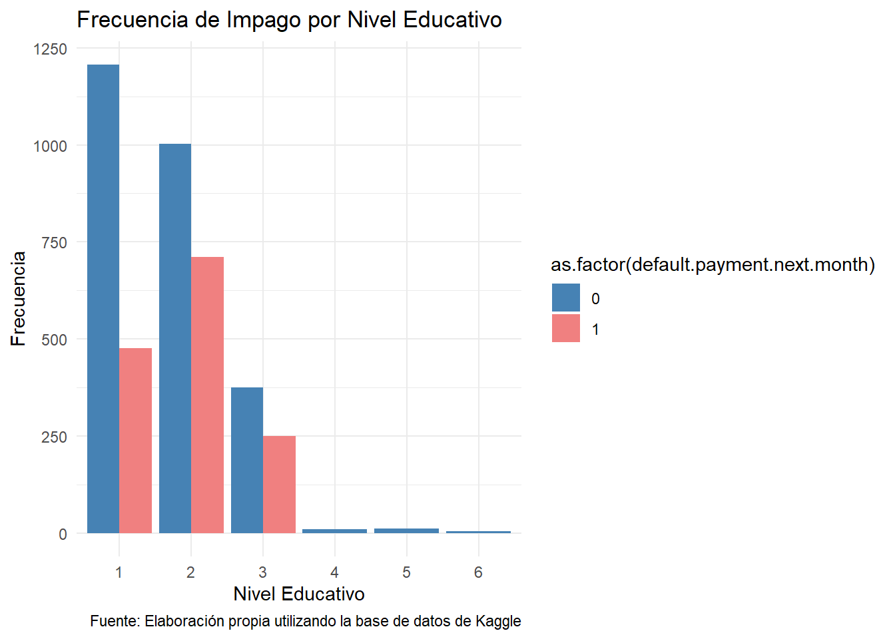
Recordemos que la etiqueta 2 equivale a las personas que están en grado de haber terminado o concluido la universidad. Con este gráfico podemos interpretar que las personas que terminaron la universidad tienen una alta proporción de haber caido en impago, esto se puede deber a créditos estudiantiles y la dificultad de conseguir empleo, sin embargo esto es una conjetura y no vamos analizar esta consecuencia, ya que solo nos importa ver qué están diciendo nuestros datos.
Con el siguiente gráfico queremos observar la proporción de las personas que caen en impago, según el nievl educativo.
ggplot(data_credit, aes(x =as.factor(EDUCATION), fill =as.factor(default.payment.next.month))) +geom_bar(position ="fill") +labs(title ="Proporción de Impagos por Nivel Educativo", x ="Nivel Educativo", y ="Proporción") +scale_fill_manual(values =c("0"="steelblue", "1"="lightcoral")) +labs(caption ="Fuente: Elaboración propia utilizando la base de datos de Kaggle") +theme_minimal()
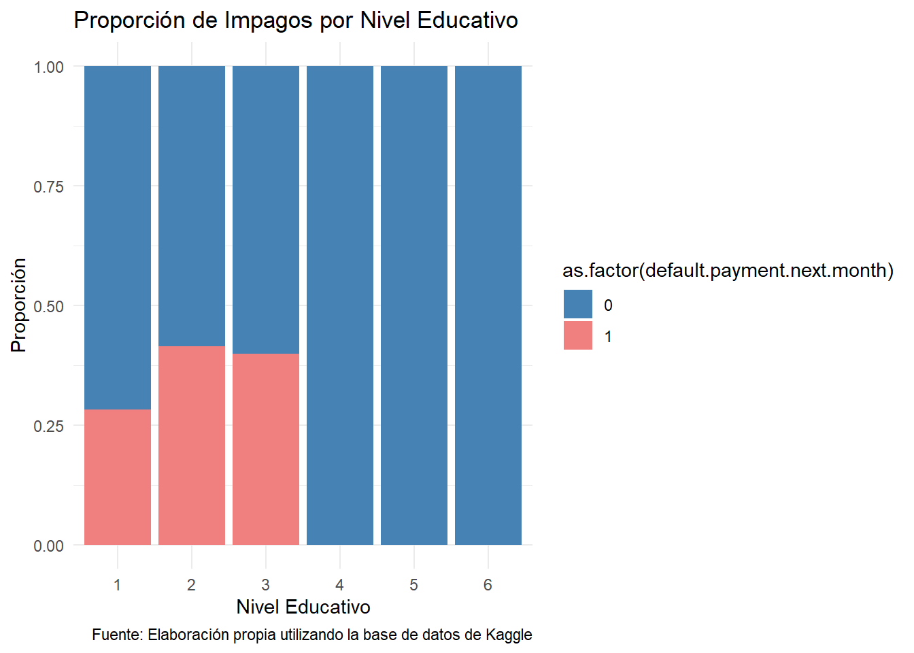
Justamente, este gráfico refleja que las personas que están en el nivel de universidad presentan una mayor proporción de impago.
Por otro lado, vamos analizar gráficamente la relación de la variable educación con el límite de crédito.
ggplot(data_credit, aes(x =as.factor(EDUCATION), y = LIMIT_BAL, fill =as.factor(EDUCATION))) +geom_boxplot() +labs(title ="Distribución del Límite de Crédito por Nivel Educativo", x ="Nivel Educativo", y ="Límite de Crédito") +labs(caption ="Fuente: Elaboración propia utilizando la base de datos de Kaggle") +theme_minimal()
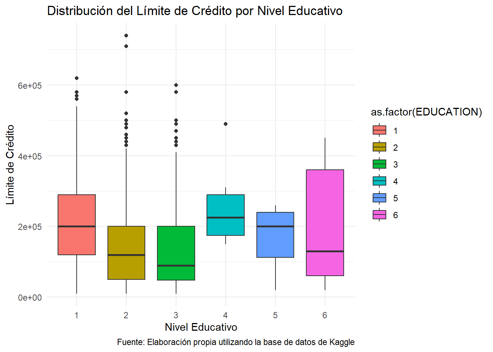
Observando las medias, inferimos que en promedio el límite de crédito otorgado a las personas que están en un nivel de posgrado es mayor que las personas que tiene solo universidad o secundaria. A su vez, la media de Universidad es mayor que la media de secundaria. Por la calidad de los datos de la base de datos, no podemos analizar con lujo de detalle los niveles 3,4 y 5.
library(ggplot2)ggplot(data_credit, aes(x = LIMIT_BAL, fill =as.factor(SEX), color =as.factor(EDUCATION))) +geom_histogram(binwidth =50000, alpha =0.5, position ="identity") +labs(x ="Monto del crédito otorgado (NT dólares)",y ="Frecuencia",title ="Distribución de montos de crédito por género y nivel educativo",fill ="Género",color ="Nivel educativo" ) +scale_fill_manual(values =c("1"="blue", "2"="pink")) +# Colores para sexoscale_color_manual(values =c("1"="darkblue", "2"="green", "3"="orange", "4"="purple", "5"="gray", "6"="black")) +labs(caption ="Fuente: Elaboración propia utilizando la base de datos de Kaggle") +theme_minimal()
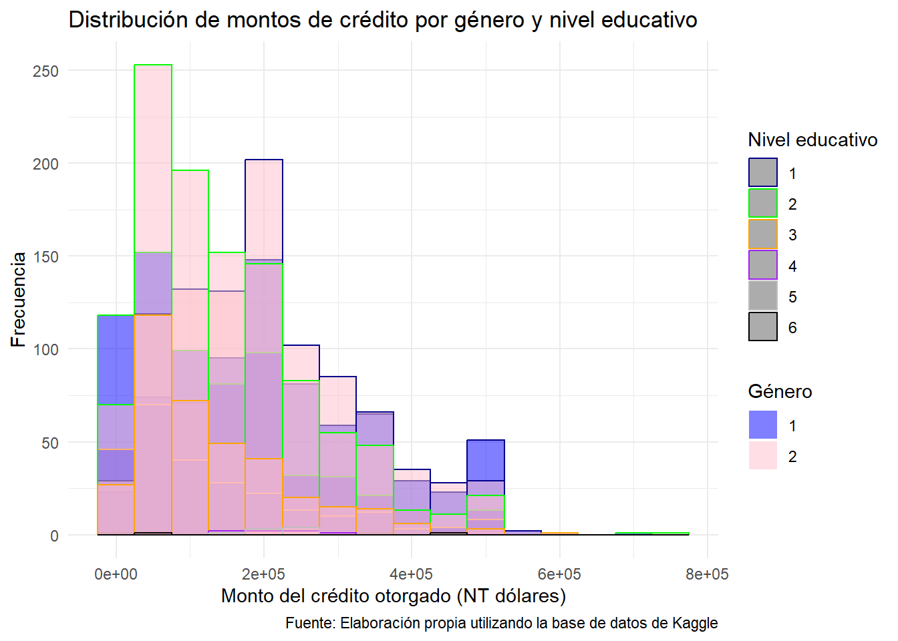
Con el gráfico anterior podemos ver la relación existente entre el nivel educativo, el género y el monto del crédito otorgado, es decir, 3 variables graficadas.
3.1.3 Análisis Matemático de las correlaciones
Para esta sección, primero vamos analizar tablas de contingencias, esto con el fin de eencontrar relaciones entre las variables, utilizaremos las pruebas chi-cuadrado y la prueba ” — “, para determinar esta relaciones entre variables categóricas.
Posteriormente, utilizaremos los índices de correlación obtenidos en la matriz de correlación para el análisis de la base de datos y con ello apoyarnos en la evidencia teórica que existe.
3.1.3.1 Tablas de Contigencias y p-values
Para esta sección vamos hacer tablas de contigencias, esto con el objetivo de buscar las relaciones que tienen las variables categóricas.
library(gmodels)# Realizamos la tabla de contingenciaCrossTable(data_credit$EDUCATION, data_credit$default.payment.next.month, prop.chisq =FALSE)
De la tabla anterior podemos ver entonces las relaciones que hay entre las variables, por ejemplo, podemos ver que de las personas de educación, que pertencen al nivel de posgrado, un 71% de esas personas no imcuplieron su pago, es decir pagaron a tiempo. Y un 29% de esas personas si cayeron en impago.
Haremos la prueba Exacta de Fisher para realizar una Prueba de Hipótesis donde nuestra hipótesis nula es. \(H_0\), no existe correlación entre las variables, y donde nuestra hipótesis alternativa, \(H_1\), es que hay relación entre las variables.
tabla_education <-table(data_credit$EDUCATION, data_credit$default.payment.next.month)# Realizar la prueba exacta de Fisher con simulación de Monte Carloset.seed(2024) # Fijamos la semillafisher_test_education <-fisher.test(tabla_education, simulate.p.value =TRUE, B =10000)print(fisher_test_education)
Fisher's Exact Test for Count Data with simulated p-value (based on
10000 replicates)
data: tabla_education
p-value = 9.999e-05
alternative hypothesis: two.sided
Gracias al test anterior podemos inferir entonces que existe una dependencia de las variables. Rechazamos la hipótesis nula, hay evidencia estadística suficiente para decir que las variables tienen una relación.
Más explicado aún, el p-value que obtuvimos fue de 0.0001, lo que es mucho más pequeño que el 5% del nivel de significancia, por lo que entonces podemos rechazar la hipótesis nula.
Por otro lado, ahora vamos a comparar las variables de sexo y de impago, esto con el objetivo de observar si el sexo influye o tiene relación con la probabilidad de caer en impago.
library(gmodels)# Realizamos la tabla de contingenciaCrossTable(data_credit$SEX, data_credit$default.payment.next.month, prop.chisq =FALSE)
Cell Contents
|-------------------------|
| N |
| N / Row Total |
| N / Col Total |
| N / Table Total |
|-------------------------|
Total Observations in Table: 4047
| data_credit$default.payment.next.month
data_credit$SEX | 0 | 1 | Row Total |
----------------|-----------|-----------|-----------|
1 | 1008 | 643 | 1651 |
| 0.611 | 0.389 | 0.408 |
| 0.386 | 0.448 | |
| 0.249 | 0.159 | |
----------------|-----------|-----------|-----------|
2 | 1603 | 793 | 2396 |
| 0.669 | 0.331 | 0.592 |
| 0.614 | 0.552 | |
| 0.396 | 0.196 | |
----------------|-----------|-----------|-----------|
Column Total | 2611 | 1436 | 4047 |
| 0.645 | 0.355 | |
----------------|-----------|-----------|-----------|
Con la tabla vemos la distribución de las variables entre ellas. Aplicamos la prueba de Fisher con simulación al igual que en el caso anterior.
tabla_sex <-table(data_credit$SEX, data_credit$default.payment.next.month)# Realizar la prueba exacta de Fisher con simulación de Monte Carloset.seed(2024)fisher_test_sex <-fisher.test(tabla_sex, simulate.p.value =TRUE, B =10000)print(fisher_test_sex)
Fisher's Exact Test for Count Data
data: tabla_sex
p-value = 0.0001387
alternative hypothesis: true odds ratio is not equal to 1
95 percent confidence interval:
0.6792443 0.8856355
sample estimates:
odds ratio
0.7755741
Gracias a la prueba anterior, obtenemos que el p-value es de 0.0001387, siendo bastante menor que el valor de significancia, el cual es de 5%, por lo que hay suficiente evidencia estadística para rechazar la hipótesis nula, así decimos entonces que existe una cierta dependencia entre estas variables.
Vamos a ver ahora como se comporta la variable MARRIAGE con el impago. Veamos primero su tabla de contingencia.
library(gmodels)# Realizamos la tabla de contingenciaCrossTable(data_credit$MARRIAGE, data_credit$default.payment.next.month, prop.chisq =FALSE)
Hagamos la misma prueba de hipótesis para determinar la relación de las variables.
tabla_marriage <-table(data_credit$MARRIAGE, data_credit$default.payment.next.month)# Realizar la prueba exacta de Fisher con simulación de Monte Carloset.seed(2024)fisher_test_marriage <-fisher.test(tabla_marriage, simulate.p.value =TRUE, B =10000)print(fisher_test_marriage)
Fisher's Exact Test for Count Data with simulated p-value (based on
10000 replicates)
data: tabla_marriage
p-value = 0.1634
alternative hypothesis: two.sided
En este caso, el valor de significancia que hemos estado utilizando es del 5%, es decir, un 0,05, como el p-value nos dió un valor de 0.1634, el p-value es mayor que el nivel de significancia, por lo que no hay evidencia estadística suficientes para rechazar la hipótesis nula, es decir, las diferencias que hemos encontrado en las categorías se pueden deber al azar. En conclusión, no podemos afirmar que el estado civil afecte al riesdo de impago.
Con esto terminamos la sección de las variables categóricas, procedemos entonces con las variables numéricas y la variable de impago.
3.1.3.2 Variables Numéricas con la Variable de Riesgo de Pago
Vamos a realizar una prueba de hipótesis entonces para las variables de LIMIT_BAL e Impago, para ello vamos a utilizar una prueba t no pareada, ya que estamos comparando poblaciones diferentes.
t_test_result <-t.test(LIMIT_BAL ~ default.payment.next.month, data = data_credit)print(t_test_result)
Welch Two Sample t-test
data: LIMIT_BAL by default.payment.next.month
t = 19.866, df = 3418.3, p-value < 2.2e-16
alternative hypothesis: true difference in means between group 0 and group 1 is not equal to 0
95 percent confidence interval:
67451.30 82223.61
sample estimates:
mean in group 0 mean in group 1
198249.7 123412.3
Este resultado no debería ser una sorpresa, pues gráficamente habíamos visto que a mayores límites de crédito, las personas tendían a incumplir menos que las personas que si lo hacían. Analicemos, el p-value tomó un valor demasiado pequeño en comparación con 0.05, por lo que hay evidencia estadística suficiente para rechazar la hipótesis nula. En conclusión, el límite de crédito tiene relación con la probabilidad de impago, en general, las personas con mayor límite de crédito tienen una menor porbabilidad de caer en impago.
Haremos un análisis similar, pero esta vez cambiando el límite de crédito por la variable de edad.
t_test_result <-t.test(AGE ~ default.payment.next.month, data = data_credit)print(t_test_result)
Welch Two Sample t-test
data: AGE by default.payment.next.month
t = -0.10677, df = 2734.6, p-value = 0.915
alternative hypothesis: true difference in means between group 0 and group 1 is not equal to 0
95 percent confidence interval:
-0.6408875 0.5746956
sample estimates:
mean in group 0 mean in group 1
36.51704 36.55014
De la prueba anterior podemos inferir que la edad no influye en el incumplimiento de los pagos, obtuvimos un p-value de 0.915 lo que es mucho mayor que nuestro nivel de significancia del 5%, así no hay evidencia estadística suficiente para rechazar la hipótesis nula, entonces no rechazamos la hipótesis nula. Concluímos que la edad no influye dado los datos en la probabilidad de caer en impago.
Con esto concluímos el análisis estadístico de la base de datos.
3.2 Parte de Planificación
3.2.1 Fichas literarias nuevas
Título: Metodología para un scoring de clientes sin referencias crediticias.
Autor: Osvaldo Espin García, Carlos Rodríguez
Año: 2013.
Nombre del tema: Perfil de clientes crediticios.
Cronología: 2011-2013.
Metodología: Recolección y comparación de datos.
Temática: Estudios económicos.
Teórica: Valoración de riesgos.
Resumen en una oración: El enfoque principal consiste en asignar un puntaje a cada solicitante, indicando la probabilidad de impago.
Argumento central: Desarrollar un modelo predictivo que permita anticipar el comportamiento de impago de los clientes.
Problema con el argumento o el tema: La mayor problemática que existe es que al basarse en la información personal de las personas, la existencia de personas con poca información en la base de datos o que acaban de iniciar en el sistema de manera que no tengan un historial de crédito, puede generar un sesgo en la muestra, lo cual llevar a que existan resultados menos precisos, lo cual termina por afectar el modelo.
Resumen en un párrafo: Esta investigación gira en torno a desarrollar un modelo predictivo que permita de cierta manera lograr anticipar el comportamiento que pueda existir de impago en función de la información personal del cliente. De manera que las instituciones financieras como lo son los bancos o cooperativas puedan asignar cierto puntaje a cada solicitante donde se indique la probabilidad de impago.
3.2.2 Construcción de las Fichas de Resultados
if (!requireNamespace("kableExtra", quietly =TRUE)) {install.packages("kableExtra")}library(kableExtra)data <-data.frame(Encabezado =c("Nombre de Su hallazgo", "Resumen en una Oración", "Problemas o Posibles Desafíos", "Resumen en un párrafo"),Contenido =c("Correlación de las Variables", "Encontramos que algunas variables presentan una correlación alta entre sí pero otras no.", "Podría ser que la relación entre las variables en realidad no es lineal.", "Al utilizar el índice de correlación de Pearson, podemos observar que existe una correlación entre las situaciones de reembolso y entre los estados de cuenta. Además, la edad podría tener una relación con el monto del préstamo."))if (knitr::is_html_output()) {# Si es HTMLkable(data, col.names =c("Encabezado", "Contenido"), format ="html", escape =FALSE) %>%kable_styling(full_width =FALSE) %>%add_header_above(c("Hallazgo de Resultado 1"=2), bold =TRUE)} else {# Si es PDFkable(data, col.names =c("Encabezado", "Contenido"), format ="latex", booktabs =TRUE) %>%kable_styling(latex_options =c("striped", "hold_position"))}
Hallazgo de Resultado 1
Encabezado
Contenido
Nombre de Su hallazgo
Correlación de las Variables
Resumen en una Oración
Encontramos que algunas variables presentan una correlación alta entre sí pero otras no.
Problemas o Posibles Desafíos
Podría ser que la relación entre las variables en realidad no es lineal.
Resumen en un párrafo
Al utilizar el índice de correlación de Pearson, podemos observar que existe una correlación entre las situaciones de reembolso y entre los estados de cuenta. Además, la edad podría tener una relación con el monto del préstamo.
if (!requireNamespace("kableExtra", quietly =TRUE)) {install.packages("kableExtra")}library(kableExtra)data <-data.frame(Encabezado =c("Nombre de Su hallazgo", "Resumen en una Oración", "Problemas o Posibles Desafíos", "Resumen en un párrafo"),Contenido =c("Relación entre la Densidad y la Cantidad de Crédito Otorgado", "Mientras más alta sea la cantidad de crédito otorgada, menor es la densidad que lo adquiere.", "Esto no siempre sería cierto para cantidades pequeñas ó no podría seguir la misma distribución en otra base de datos.", "Al estimar la cantidad de personas que adquieren un crédito, la mayor cantidad de personas adquieren créditos de pequeñas cantidades antes que uno grande. Esto puede ser dadas las necesidades de las personas ó el riesgo que puede obtenerse de adquirir un gran crédito."))if (knitr::is_html_output()) {# Si es HTMLkable(data, col.names =c("Encabezado", "Contenido"), format ="html", escape =FALSE) %>%kable_styling(full_width =FALSE) %>%add_header_above(c("Hallazgo de Resultado 2"=2), bold =TRUE)} else {# Si es PDFkable(data, col.names =c("Encabezado", "Contenido"), format ="latex", booktabs =TRUE) %>%kable_styling(latex_options =c("striped", "hold_position"))}
Hallazgo de Resultado 2
Encabezado
Contenido
Nombre de Su hallazgo
Relación entre la Densidad y la Cantidad de Crédito Otorgado
Resumen en una Oración
Mientras más alta sea la cantidad de crédito otorgada, menor es la densidad que lo adquiere.
Problemas o Posibles Desafíos
Esto no siempre sería cierto para cantidades pequeñas ó no podría seguir la misma distribución en otra base de datos.
Resumen en un párrafo
Al estimar la cantidad de personas que adquieren un crédito, la mayor cantidad de personas adquieren créditos de pequeñas cantidades antes que uno grande. Esto puede ser dadas las necesidades de las personas ó el riesgo que puede obtenerse de adquirir un gran crédito.
if (!requireNamespace("kableExtra", quietly =TRUE)) {install.packages("kableExtra")}library(kableExtra)data <-data.frame(Encabezado =c("Nombre de Su hallazgo", "Resumen en una Oración", "Problemas o Posibles Desafíos", "Resumen en un párrafo"),Contenido =c("Relación entre la Frecuencia de Crédito o con el Nivel educativo.", "Un mayor nivel educativo permite ó requiere una mayor cantidad de créditos.", "No tener certeza de si el motivo del(los) crédito(s) es porque la persona pueda permitírselo ó lo necesite.", "Al utilizar el histograma de edades por nivel educativo con la frecuencia de créditos, podemos observar que las personas con posgrados tienen más créditos que las personas que no lo tienen. Esto puede ser dado que las personas con posgrado necesiten un crédito para pagar sus estudios de posgrado (los cuales generalmente son costosos) ó que puedan permitirse un crédito dados sus ingresos."))if (knitr::is_html_output()) {# Si es HTMLkable(data, col.names =c("Encabezado", "Contenido"), format ="html", escape =FALSE) %>%kable_styling(full_width =FALSE) %>%add_header_above(c("Hallazgo de Resultado 3"=2), bold =TRUE)} else {# Si es PDFkable(data, col.names =c("Encabezado", "Contenido"), format ="latex", booktabs =TRUE) %>%kable_styling(latex_options =c("striped", "hold_position"))}
Hallazgo de Resultado 3
Encabezado
Contenido
Nombre de Su hallazgo
Relación entre la Frecuencia de Crédito o con el Nivel educativo.
Resumen en una Oración
Un mayor nivel educativo permite ó requiere una mayor cantidad de créditos.
Problemas o Posibles Desafíos
No tener certeza de si el motivo del(los) crédito(s) es porque la persona pueda permitírselo ó lo necesite.
Resumen en un párrafo
Al utilizar el histograma de edades por nivel educativo con la frecuencia de créditos, podemos observar que las personas con posgrados tienen más créditos que las personas que no lo tienen. Esto puede ser dado que las personas con posgrado necesiten un crédito para pagar sus estudios de posgrado (los cuales generalmente son costosos) ó que puedan permitirse un crédito dados sus ingresos.
if (!requireNamespace("kableExtra", quietly =TRUE)) {install.packages("kableExtra")}library(kableExtra)data <-data.frame(Encabezado =c("Nombre de Su hallazgo", "Resumen en una Oración", "Problemas o Posibles Desafíos", "Resumen en un párrafo"),Contenido =c("Relación entre el nivel educativo y los límites de crédito.", "Mientras más alto sea el nivel educativo, más alto tienden a ser los límites de créditos aprobados.", "No tener certeza de si el motivo del(los) crédito(s) es porque la persona pueda permitírselo ó lo necesite.", "Al utilizar el gráfico de densidad por nivel educativo con el límite de crédito, podemos observar que las personas con un nivel de Posgrado tienen mayores niveles de crédito. Sin embargo, esto puede ser dado que las personas con mayores niveles educativos puedan permitirse los niveles de crédito dado su ingreso ó más bien que las personas necesiten ese crédito para pagar sus estudios de posgrado. Estudios que generalmente son muy costosos."))if (knitr::is_html_output()) {# Si es HTMLkable(data, col.names =c("Encabezado", "Contenido"), format ="html", escape =FALSE) %>%kable_styling(full_width =FALSE) %>%add_header_above(c("Hallazgo de Resultado 4"=2), bold =TRUE)} else {# Si es PDFkable(data, col.names =c("Encabezado", "Contenido"), format ="latex", booktabs =TRUE) %>%kable_styling(latex_options =c("striped", "hold_position"))}
Hallazgo de Resultado 4
Encabezado
Contenido
Nombre de Su hallazgo
Relación entre el nivel educativo y los límites de crédito.
Resumen en una Oración
Mientras más alto sea el nivel educativo, más alto tienden a ser los límites de créditos aprobados.
Problemas o Posibles Desafíos
No tener certeza de si el motivo del(los) crédito(s) es porque la persona pueda permitírselo ó lo necesite.
Resumen en un párrafo
Al utilizar el gráfico de densidad por nivel educativo con el límite de crédito, podemos observar que las personas con un nivel de Posgrado tienen mayores niveles de crédito. Sin embargo, esto puede ser dado que las personas con mayores niveles educativos puedan permitirse los niveles de crédito dado su ingreso ó más bien que las personas necesiten ese crédito para pagar sus estudios de posgrado. Estudios que generalmente son muy costosos.
if (!requireNamespace("kableExtra", quietly =TRUE)) {install.packages("kableExtra")}library(kableExtra)data <-data.frame(Encabezado =c("Nombre de Su hallazgo", "Resumen en una Oración", "Problemas o Posibles Desafíos", "Resumen en un párrafo"),Contenido =c("Relación de la variable de impago con los límites de crédito", "Un mejor historial crediticio, es decir, menor probabilidad de impago; permite un mayor límite de crédito.", "No necesariamente puede generalizarse a todas las bases de datos", "Al utilizar el histograma de límite de crédito por la variable de impago, pudimos observar que, mientras más alto sea el límite de crédito, entonces menos personas tienen el estado de cuenta ``impago''. Esto puede deberse a que las personas que tienen un mayor acceso a créditos de un monto alto tienden a tener un historial de crédito exitoso y por ello pueden optar por mejores opciones de financiamiento."))if (knitr::is_html_output()) {# Si es HTMLkable(data, col.names =c("Encabezado", "Contenido"), format ="html", escape =FALSE) %>%kable_styling(full_width =FALSE) %>%add_header_above(c("Hallazgo de Resultado 5"=2), bold =TRUE)} else {# Si es PDFkable(data, col.names =c("Encabezado", "Contenido"), format ="latex", booktabs =TRUE) %>%kable_styling(latex_options =c("striped", "hold_position"))}
Hallazgo de Resultado 5
Encabezado
Contenido
Nombre de Su hallazgo
Relación de la variable de impago con los límites de crédito
Resumen en una Oración
Un mejor historial crediticio, es decir, menor probabilidad de impago; permite un mayor límite de crédito.
Problemas o Posibles Desafíos
No necesariamente puede generalizarse a todas las bases de datos
Resumen en un párrafo
Al utilizar el histograma de límite de crédito por la variable de impago, pudimos observar que, mientras más alto sea el límite de crédito, entonces menos personas tienen el estado de cuenta ``impago''. Esto puede deberse a que las personas que tienen un mayor acceso a créditos de un monto alto tienden a tener un historial de crédito exitoso y por ello pueden optar por mejores opciones de financiamiento.
if (!requireNamespace("kableExtra", quietly =TRUE)) {install.packages("kableExtra")}library(kableExtra)data <-data.frame(Encabezado =c("Nombre de Su hallazgo", "Resumen en una Oración", "Problemas o Posibles Desafíos", "Resumen en un párrafo"),Contenido =c("Relación entre el sexo y la variable de impago.", "Las mujeres tienen más frecuencia de impago que los hombres.", "Esto no se puede generalizar a las demás bases de datos ni países del resto del mundo", "Al analizar la frecuecia de impago por sexo, podemos ver que la cantidad de mujeres en estado de impago supera a la cantidad de los hombres en ese mismo estado. Si bien no es una buena medida para todo el mundo, podemos ver que en el país de estudio, las mujeres pueden tener un peor historial crediticio que los hombres."))if (knitr::is_html_output()) {# Si es HTMLkable(data, col.names =c("Encabezado", "Contenido"), format ="html", escape =FALSE) %>%kable_styling(full_width =FALSE) %>%add_header_above(c("Hallazgo de Resultado 6"=2), bold =TRUE)} else {# Si es PDFkable(data, col.names =c("Encabezado", "Contenido"), format ="latex", booktabs =TRUE) %>%kable_styling(latex_options =c("striped", "hold_position"))}
Hallazgo de Resultado 6
Encabezado
Contenido
Nombre de Su hallazgo
Relación entre el sexo y la variable de impago.
Resumen en una Oración
Las mujeres tienen más frecuencia de impago que los hombres.
Problemas o Posibles Desafíos
Esto no se puede generalizar a las demás bases de datos ni países del resto del mundo
Resumen en un párrafo
Al analizar la frecuecia de impago por sexo, podemos ver que la cantidad de mujeres en estado de impago supera a la cantidad de los hombres en ese mismo estado. Si bien no es una buena medida para todo el mundo, podemos ver que en el país de estudio, las mujeres pueden tener un peor historial crediticio que los hombres.
3.2.3 Construcción de la UVE de Gowin Modificada
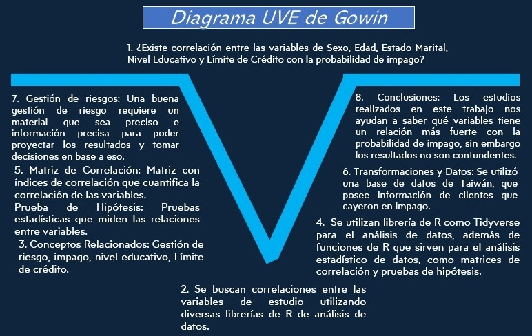
UVE de Gowin Nueva
3.3 Parte de Escritura
3.3.1 Escribir, escribir, escribir
3.3.1.1 La valoración del riesgo en el sector financiero
El problema que se va a tratar en el presente trabajo es de determinar la relación existente entre las variables de Monto de un crédito, nivel de educación y situaciones de pago con la calificación de riesgo. Desde el punto de vista teórico, el autor (Palacios 2012), menciona que “La principal función que radica en las calificaciones crediticias es la evaluación de la mayor o menor probabilidad de pago de la deuda y los intereses, proporcionando indicadores que sirvan de referencia a los inversores con el fin de que puedan tener conocimiento del riesgo crediticio de una forma simple y accesible”. Desde este punto de vista, hay un apoyo en la investigación que tratamos de realizar, pues la calificación de riesgo es de suma importancia en el mundo financiero. Este mismo autor menciona que “Su importancia deriva de su implantación dentro de la regulación, lo que afecta a todo el entramado institucional, y sectores clave de la sociedad como son el bancario y las agencias de seguros y reaseguros”.
Inicialmente mencionamos que la teoría respaldaba nuestra conjetura pues no había un análisis de datos que afirmara lo antes explicado. Después del cambio de base de datos y un nuevo análisis exploratorio y estadístico, podemos observar que realmente sí hay una relación como se planteaba en las Bitácoras 1 y 2. Si bien una variable no es determinante para las demás, si guardan una relación tal y como se pueden observar en las fichas de resultados.
El estudio del análisis financiero es de suma importancia en la actualidad, ya que las transacciones de los flujos de dinero cada vez son mayores, es decir, vender deuda para obtener financiamiento en el corto plazo es una de las estrategias más aplicadas. Por ello tanto inversores como prestatarios, según (Palacios 2012), “hacen uso de las calificaciones crediticias como un indicador de la probabilidad de recuperar su dinero. Adicionalmente, los prestatarios pueden beneficiarse de tener calificada su deuda, con el objetivo de colocarla con mayor facilidad y eliminar las dudas que haya relación a ellos.” Asimismo, ambas parten obtienen beneficio de que exista este rating en el mundo de la información financiera. Y desde el punto de vista del inversor, como menciona la autora (Chicu 2020), “…a la hora de analizar una inversión, debemos valorar la rentabilidad esperada, así como la liquidez que perdemos y el riesgo que estamos dispuestos a asumir”. Por lo tanto, poseer la información de rating es de suma utilidad, pues ayuda a los inversores a realizar mejores proyecciones.
Incluso podríamos pensar que, según los resultados del análisis, mientras mejor calificación tenga una persona en su historial de crédito, las entidades tienden a ofrecer mejores condiciones de préstamo e inversión. Por eso, según los diferentes histogramas y gráficos de densidad realizados, podemos ver que algunos créditos tienen un monto alto y tener la variable de impago inactiva.
En adición, haciendo referencia a esta misma autora “…la gestión de riesgos tiene un lugar cada vez que un inversor analiza e intenta cuantificar las pérdidas potenciales en una inversión y luego toma las medidas apropiadas, considerando sus objetivos de inversión y su tolerancia al riesgo.” Esto último viene de la mano con lo que son las proyecciones, pues le permite al inversionista hacer un mejor análisis y una gestión de riesgos adecuada, que podemos definir según Chicu como “El proceso de identificación, análisis e incorporación de la incertidumbre en las decisiones de inversión” (Chicu 2020). Reforzando lo que menciona Chicu, la autora (Maria de los Ángeles Herrera 2024), menciona en adición a la gestión de riesgos “el contexto de incertidumbre genera inevitablemente un riesgo, y es ahí cuando la institución financiera debe preservar su valor económico y la integridad de los recursos confiados por los depositantes y socios.” Y añadiendo la definición de esta misma autora tenemos que la gestión de riesgos es “la denominación que se utiliza para el conjunto de técnicas y herramientas que pretenden maximizar el valor económico de la institución financiera, en un contexto de incertidumbre”. Concluyendo, la gestión de riesgos depende íntimamente de la calificación de riesgo, pues permite tener un parámetro ante la incertidumbre que representa invertir. Con esto, podemos proceder a explicar algunas de estas herramientas para el análisis de las variables en este estudio.
3.3.1.2 Prueba Exacta de Fisher para Datos de Conteo
Según la documentación de R y las t'ecnicas de pruebas de hip'otesis vistas en el libro de (Pértega Díaz y Pita Fernández 2004), esta es una prueba para variables categóricas donde hemos usado tablas de contingencias, de ahí nuestra escogencia de esta prueba. Si bien el método está pensando para que se realice a pruebas 2x2, donde la prueba chi-cuadrado falla, hemos decidio utilizar la de fisher para tablas más grandes, usando simulaciones.
En nuestro caso no hace falta utilizar simulaciones cuando hacemos la prueba para las variables de sexo y riesgo de pago, ya que hacen una tabla 2x2, entonces el cálculo da exacto, pues es para el tipo de tablas para las que fue creado el método. Sin embargo, cuando utilizamos la prueba en las tablas de Educación con Impago y de Estado Civil con Impago, hay que utilizar valores simulados, pues estas tablas no cumplen ser 2x2.
Para el caso de 2x2, el cálculo es exacto y para calcular el p-value se utiliza una distribución hipergeométrica, utilizando las observaciones de la tabla de contigencias.
\[
p = \frac{(a + b)! \times (c + d)! \times (a + c)! \times (b + d)!}{n!a!b!c!d!}
\] La fórmula anterior es la manera en cómo se calcula para una tabla 2x2. Para tablas que no son de esta forma no tenemos la fórmula de manera explícita, pues es una función de R, donde indica que se simula varias veces la tabla, a saber un valor \(b\), donde entre más grande sea este \(b\) mejor aproximación del p valor vamos a tener.
3.3.1.3 Prueba T
La siguiente prueba tomamos con referencia el método del libro de Probabilidad y Estadística de (Walpole et al. 1999). Esta prueba la utilizamos cuando queremos comparar la media de dos poblaciones, digamos que se utiliza cuando queremos ver la relación entre variables numéricas con variables categóricas, ya que dividimos entre las poblaciones, que viene siendo las poblaciones y las medias salen de la variable numérica.
De maneta teórica, el método para calcularlo es el siguiente:
Primero el estadístico a utilizar, el cual es: \[
t = \frac{\overline{X}_1 - \overline{X}_2}{\sqrt{\frac{s_1^2}{n_1} + \frac{s_2^2}{n_2}}}
\] Este estadístico sigue una distribución t, es decir una distribución sin parámetros, lo cual es de mucha utilidad.
Posteriormente, para calcular el p-value se utiliza la siguiente fórmula:
\[
p\text{-valor} = 2 \times P(T > |t|)
\]
Así entonces hemos explicado las dos pruebas de hipótesis utilizadas en nuestro trabajo. Cabe recalcar que las funciones de R aplican otros procedimientos para ajustar los valores.
3.3.2 Conclusion
Este trabajo tuvo como objetivo explorar la correlación entre diversas características de los perfiles de los clientes y su relación con la probabilidad de impago en el contexto de un banco de Taiwán. Para ello, se aplicaron técnicas estadísticas y funciones en R para abordar la pregunta de investigación: “¿Existe correlación entre las variables de Sexo, Edad, Estado Marital, Nivel Educativo y Límite de Crédito con la probabilidad de impago?”. La motivación detrás de esta pregunta radica en la importancia de identificar características que permitan a los bancos y entidades financieras perfilar a clientes con mayor probabilidad de caer en impago, dado que muchas de estas instituciones basan su negocio en el otorgamiento de créditos.
El análisis buscó identificar patrones entre los clientes que caen en impago y determinar si tales patrones eran atribuibles al azar o si había una correlación estadísticamente significativa. Los resultados mostraron que, en el caso de las variables numéricas, solo la edad no presentaba relación con la probabilidad de impago, mientras que en las variables categóricas, el estado marital también resultó no estar relacionado. Esto indica que dichas variables no representan un factor significativo en el riesgo de crédito o probabilidad de impago.
Por otro lado, los hallazgos coinciden en gran medida con nuestras expectativas teóricas, dado que variables como el nivel educativo, el sexo y el límite de crédito sí influyen en la probabilidad de impago. Una limitación de este estudio es que no contamos con una metodología robusta de cálculo de probabilidades de impago o de evaluación del riesgo de crédito, ya que estas metodologías son conservadas de forma confidencial por las empresas y varían entre instituciones. No obstante, logramos responder a nuestra pregunta de investigación identificando correlaciones relevantes y descartando variables con menor impacto a través de pruebas de hipótesis.
Para futuros estudios, recomendamos incluir variables adicionales, tales como el motivo del préstamo, los años del crédito, el salario actual del solicitante y su historial crediticio previo, ya que estos factores podrían enriquecer los resultados y permitir una caracterización más precisa de los perfiles de riesgo.
Este trabajo resulta útil para instituciones financieras y casas de préstamo en sus etapas iniciales de operación, ya que pueden apoyarse en estos resultados para desarrollar un perfil de cliente con mayor probabilidad de pago. Al observar que variables como el sexo, el nivel educativo y el límite de crédito influyen en el riesgo de impago, estas entidades pueden empezar a construir criterios de préstamo más sólidos y orientados a la disminución del riesgo.
3.3.3 Introducción
Este estudio se enfoca en desarrollar un estudio en el cual se avale si variables como lo son la edad, el género, el estado marital y el nivel de educación, tienen algún peso o relevancia a la hora de medir el riesgo financiero de los prestatarios. De manera que lo que se busca es identificar patrones y con ello obtener una visión mas completa que no se limite únicamente a las características financieras de las personas, como lo es su nivel de ingresos, sino que también considera el contexto y características propias en las que se desenvuelve cada individuo.
Por ello, es que este estudio comparar variables cuantitativas con variables cualitativas y tratar de ver la relación o correlación que pueda existir entre ellas, ya que al final todo ello se relaciona intrínsecamente con aspectos propios del prestatario, lo cual a su vez ayuda a generar una perspectiva mas robusta del riesgo que el mismo puede generar para alguna entidad financiera llamase banco u otra.
Por lo cual, la presente investigación tiene como finalidad lograr determinar si variables cualitativas tienen una verdadera relevancia a la hora de estimar el riesgo de impago de las personas, lo cual ha su vez llega a ser pertinente en lo que es la carrera de ciencias actuariales, por lo que se pudieron usar herramientas que irán viendo a lo largo de los siguientes cursos, pero que llegan a ser muy útiles para el propósito de este trabajo.
De manera que el objetivo principal de esta investigación es determinar si existe una correlación positiva entre algunas variables cualitativas y factores cuantitativos que se utilizan para determinar el riesgo de impago, esto a través del uso de una base de datos de un banco de Taiwán la cual brinda suficiente información para nuestro propósito.
Por lo cual, esta investigación se fundamenta en un marco teórico y empírico con el que se busca lograr determinar a partir de varios métodos y pruebas la existencia o no de correlación entre nuestras variables. A su vez, el marco teórico que se maneja para esta investigación parece muy pertinente, esto debido a que los autores desean ir más allá de los modelos tradicionales y explorar factores adicionales al contexto económico de los prestatarios, lo cual da una mayor perspectiva que permite deslumbrar elementos de riesgo que podrían llegar a pasar desapercibidos en estudios un poco más convencionales.
3.3.4 Resumen
Este estudio busca determinar si variables cualitativas como lo son la edad, el género, el estado marital y el nivel educativo influyen en el riesgo financiero de los prestatarios, explorando su relación con variables cuantitativas, como lo es el límite de crédito. Con ello, se pretende identificar patrones que contribuyan a una evaluación integral del riesgo de impago. Para este fin, se utilizó una base de datos de clientes de un banco en Taiwán del año 2005. De manera que los datos se analizaron en R, aplicando representaciones gráficas, matrices de correlación para variables numéricas y tablas de contingencia para variables categóricas. A su vez, se utilizaron pruebas de hipótesis, como lo es la prueba T, la cual permitió evaluar la significancia de las diferencias entre niveles de variables cualitativas. De esta forma, se pudo revelar que el nivel educativo, el sexo y el límite de crédito tienen una correlación significativa con el riesgo de impago. Estos hallazgos indican que ciertas características no financieras sí influyen en la probabilidad de incumplimiento. En conclusión, este estudio aporta ciertas percepciones para entidades financieras que buscan perfilar clientes que tengan mayor probabilidad de pago. Para ello, se tiene como resultado fundamental del que estudio que variables como el sexo, el nivel educativo y el límite de crédito son útiles en la predicción del riesgo de impago, sugiriendo criterios adicionales para lo que es el análisis de crédito.
3.3.5 Ordenamiento Final
3.3.5.1 Titulo
Análisis de variables cualitativas en relación al riesgo crediticio
3.3.5.2 Resumen
Este estudio busca determinar si variables cualitativas como lo son la edad, el género, el estado marital y el nivel educativo influyen en el riesgo financiero de los prestatarios, explorando su relación con variables cuantitativas, como lo es el límite de crédito. Con ello, se pretende identificar patrones que contribuyan a una evaluación integral del riesgo de impago. Para este fin, se utilizó una base de datos de clientes de un banco en Taiwán del año 2005. De manera que los datos se analizaron en R, aplicando representaciones gráficas, matrices de correlación para variables numéricas y tablas de contingencia para variables categóricas. A su vez, se utilizaron pruebas de hipótesis, como lo es la prueba T, la cual permitió evaluar la significancia de las diferencias entre niveles de variables cualitativas. De esta forma, se pudo revelar que el nivel educativo, el sexo y el límite de crédito tienen una correlación significativa con el riesgo de impago. Estos hallazgos indican que ciertas características no financieras sí influyen en la probabilidad de incumplimiento. En conclusión, este estudio aporta ciertas percepciones para entidades financieras que buscan perfilar clientes que tengan mayor probabilidad de pago. Para ello, se tiene como resultado fundamental del que estudio que variables como el sexo, el nivel educativo y el límite de crédito son útiles en la predicción del riesgo de impago, sugiriendo criterios adicionales para lo que es el análisis de crédito.
3.3.5.3 Palabras Clave
Nivel de educacion
Edad
Estado civil
Monto de credito
Limite de Credito
Riesgo de impago
3.3.5.4 Introduccion
Este estudio se enfoca en desarrollar un estudio en el cual se avale si variables como lo son la edad, el género, el estado marital y el nivel de educación, tienen algún peso o relevancia a la hora de medir el riesgo financiero de los prestatarios. De manera que lo que se busca es identificar patrones y con ello obtener una visión mas completa que no se limite únicamente a las características financieras de las personas, como lo es su nivel de ingresos, sino que también considera el contexto y características propias en las que se desenvuelve cada individuo.
Por ello, es que este estudio comparar variables cuantitativas con variables cualitativas y tratar de ver la relación o correlación que pueda existir entre ellas, ya que al final todo ello se relaciona intrínsecamente con aspectos propios del prestatario, lo cual a su vez ayuda a generar una perspectiva mas robusta del riesgo que el mismo puede generar para alguna entidad financiera llamase banco u otra.
Por lo cual, la presente investigación tiene como finalidad lograr determinar si variables cualitativas tienen una verdadera relevancia a la hora de estimar el riesgo de impago de las personas, lo cual ha su vez llega a ser pertinente en lo que es la carrera de ciencias actuariales, por lo que se pudieron usar herramientas que irán viendo a lo largo de los siguientes cursos, pero que llegan a ser muy útiles para el propósito de este trabajo.
De manera que el objetivo principal de esta investigación es determinar si existe una correlación positiva entre algunas variables cualitativas y factores cuantitativos que se utilizan para determinar el riesgo de impago, esto a través del uso de una base de datos de un banco de Taiwán la cual brinda suficiente información para nuestro propósito.
Por lo cual, esta investigación se fundamenta en un marco teórico y empírico con el que se busca lograr determinar a partir de varios métodos y pruebas la existencia o no de correlación entre nuestras variables. A su vez, el marco teórico que se maneja para esta investigación parece muy pertinente, esto debido a que los autores desean ir más allá de los modelos tradicionales y explorar factores adicionales al contexto económico de los prestatarios, lo cual da una mayor perspectiva que permite deslumbrar elementos de riesgo que podrían llegar a pasar desapercibidos en estudios un poco más convencionales.
3.3.5.5 Metodología
El presente trabajo es un estudio correlacional, cuyo objetivo es identificar las relaciones entre las variables seleccionadas en la base de datos de un banco de Taiwán correspondiente al año 2005, la cual contiene información sobre el riesgo crediticio de los clientes. En particular, el interés radica en determinar si existen relaciones significativas entre ciertas variables (edad, estado civil, nivel educativo y límite de crédito) y la probabilidad de caer en impago.
Mediante esta metodología, buscamos analizar la correlación entre estas variables y la probabilidad de incumplimiento en el pago. La muestra utilizada es la base de datos mencionada, proveniente de un banco en Taiwán, que proporciona datos relevantes para este análisis de riesgo.
Para el análisis de los datos, se empleará el lenguaje de programación R, dada su facilidad de uso y compatibilidad con herramientas de análisis estadístico avanzadas. El procedimiento comienza con una limpieza de la base de datos, un paso esencial ya que las bases de datos suelen contener información que no aporta al análisis estadístico; por lo tanto, es necesario asegurar que los datos estén en una forma óptima para el análisis. Una vez limpia, se procede a un análisis gráfico, generando representaciones visuales de las variables tanto de manera individual como conjunta, con el fin de observar cómo se relacionan gráficamente y formular algunas hipótesis preliminares.
Posteriormente, se aplicará una matriz de correlación para identificar relaciones entre las variables numéricas. Para las variables categóricas, se utilizarán tablas de contingencia y, en caso de tablas mayores que 2x2, el método exacto de Fisher con simulación para obtener resultados precisos. Además, para explorar la dependencia entre variables numéricas y categóricas, se llevarán a cabo pruebas de hipótesis como la prueba t, evaluando si existen diferencias significativas en las medias de los distintos niveles de las variables categóricas.
Finalmente, se realizará un análisis bibliográfico para contrastar los hallazgos empíricos con la teoría existente sobre el tema. Este análisis nos permitirá evaluar si nuestros resultados se alinean con lo documentado previamente en la literatura y aportar un criterio fundamentado sobre las relaciones encontradas en la base de datos.
3.3.5.6 Resultados
Correlación de las variables
library(dplyr)library(ggplot2)library(reshape2)# Crear la matriz de correlaciónmatriz_correlacion <-cor(data_credit_numerico, use ="complete.obs")# Creamos la variable para ver la matriz de correlación como un gráfico de calorbase_matriz <-melt(matriz_correlacion)# Hacemos el plot de la base ggplot(base_matriz, aes(Var1, Var2, fill = value)) +geom_tile(color ="white") +scale_fill_gradient2(low ="blue", high ="red", mid ="white", midpoint =0, limit =c(-1, 1), space ="Lab") +theme_minimal() +geom_text(aes(label =round(value, 2)), color ="black", size =3) +labs(title ="Matriz de Correlación de Variables Numéricas",x ="", y ="") +labs(caption ="Fuente: Elaboración propia utilizando la base de datos de Kaggle") +theme(axis.text.x =element_text(angle =45, hjust =1))
Figura 1: Matriz de Correlación
Al utilizar el índice de correlación de Pearson, se puede observar la correlacion que existe entre las distintas variables, más en especifico entre las situaciones de reembolso y entre los estados de cuenta. Además, se observa a simple vista como la edad podría llegar a tener algún tipo de relación con el monto del préstamo.
Relación entre la Densidad y la Cantidad de Crédito Otorgado
library(ggplot2)library(dplyr)data_credit %>%ggplot(aes(x = LIMIT_BAL)) +geom_histogram(aes(y =after_stat(density)), binwidth =50000, fill ="steelblue", color ="black", alpha =0.7) +geom_density(color ="red", size =1) +# Densidad en línea rojageom_vline(aes(xintercept =mean(LIMIT_BAL)), linetype ="dashed", color ="black", size =1) +# Línea punteada de la medialabs(title ="Histograma y Densidad de la Cantidad de Crédito Otorgado",x ="Crédito Otorgado",y ="Densidad") +labs(caption ="Fuente: Elaboración propia utilizando la base de datos de Kaggle") +theme_minimal()
Warning: Using `size` aesthetic for lines was deprecated in ggplot2 3.4.0.
ℹ Please use `linewidth` instead.
De lo anterior se entiende que al momento de estimar la cantidad de personas que llegan a adquirir un crédito, en su gran mayoria lo hacen por un monto relativamente pequeño, en comparacion con la cantidad de personas que adequieren un credito de mayor valor. Lo cual puede deberse a las necesidades de las personas ó al propio riesgo que viene intrinseco al adquirir un crédito de mayor valor.
Relación entre la Frecuencia de impago con el nivel educativo.
library(ggplot2)library(dplyr)data_credit %>%ggplot(aes(x = LIMIT_BAL)) +geom_histogram(binwidth =50000, fill ="steelblue", color ="black", alpha =0.7) +geom_vline(aes(xintercept =mean(LIMIT_BAL, na.rm =TRUE)), color ="red", linetype ="dashed", size =1) +labs(title ="Histograma de los límites de crédito por nivel educativo.",x ="Límite de Crédito",y ="Frecuencia") +facet_wrap(~EDUCATION, labeller =labeller(EDUCATION =c("1"="Posgrado", "2"="Universidad", "3"="Secundaria", "4"="Otros", "5"="Desconocido", "6"="Desconocido" ))) +labs(caption ="Fuente: Elaboración propia utilizando la base de datos de Kaggle") +theme_minimal()
Al utilizar el histograma de edades por nivel educativo con la frecuencia de créditos, se puede observar que las personas con posgrados tienen una mayor frecuencia de caer en impago que las personas que no lo tienen. Esto puede ser dado que las personas con posgrado necesiten un crédito para pagar sus estudios de posgrado (los cuales generalmente son costosos) ó que puedan permitirse un crédito dados sus ingresos.
Relación entre el nivel educativo y los límites de crédito.
library(ggplot2)library(dplyr)library(ggridges)data_credit %>%ggplot(aes(x = LIMIT_BAL, y =as.factor(EDUCATION), fill =as.factor(EDUCATION), color =as.factor(EDUCATION))) +geom_density_ridges(alpha =0.5) +labs(title ="Densidad de los límites de crédito por nivel educativo.",x ="Límite de Crédito",y ="Nivel Educativo") +scale_fill_manual(values =c("1"="steelblue", "2"="lightblue", "3"="lightgreen", "4"="lightyellow", "5"="lightcoral", "6"="lightsalmon")) +scale_color_manual(values =c("1"="blue", "2"="darkblue", "3"="darkgreen", "4"="darkorange", "5"="darkred", "6"="salmon")) +scale_y_discrete(labels =c("1"="Posgrado", "2"="Universidad", "3"="Secundaria", "4"="Otros", "5"="Desconocido", "6"="Desconocido" )) +labs(caption ="Fuente: Elaboración propia utilizando la base de datos de Kaggle") +theme_minimal()
Picking joint bandwidth of 49800
Al utilizar el gráfico de densidad por nivel educativo con el límite de crédito, podemos observar que las personas con un nivel de Posgrado tienen mayores niveles de crédito. Sin embargo, esto puede ser dado que las personas con mayores niveles educativos puedan permitirse los niveles de crédito dado su ingreso ó más bien que las personas necesiten ese crédito para pagar sus estudios de posgrado. Estudios que generalmente son muy costosos.
Ademas, las densidades que m'as llaman nuestra atención son las de secundaria, universidad y posgrado, esto por el hecho de que ellas son las que tienen la mayor concentración de datos.Además, veamos que las densidades tienen más o menos una distribución exponencial.
Relación de la variable de impago con los límites de crédito
library(ggplot2)library(dplyr)data_credit %>%ggplot(aes(x = LIMIT_BAL)) +geom_histogram(binwidth =50000, fill ="steelblue", color ="black", alpha =0.7) +geom_vline(aes(xintercept =mean(LIMIT_BAL, na.rm =TRUE)), color ="red", linetype ="dashed", size =1) +labs(title ="Histograma de los límites de crédito facet por Impago",x ="Límite de Crédito",y ="Frecuencia") +facet_wrap(~default.payment.next.month, labeller =as_labeller(c("0"="A tiempo", "1"="Impago"))) +labs(caption ="Fuente: Elaboración propia utilizando la base de datos de Kaggle") +theme_minimal()
Agregamos dicho gráfico de densidades para las anteriores variables.
library(ggplot2)library(dplyr)library(ggridges)data_credit %>%ggplot(aes(x = LIMIT_BAL, y =as.factor(default.payment.next.month), fill =as.factor(default.payment.next.month), color =as.factor(default.payment.next.month))) +geom_density_ridges(alpha =0.5) +labs(title ="Densidad de los límites de crédito por estado de impago.",x ="Límite de Crédito",y ="Estado de Impago") +scale_fill_manual(values =c("0"="steelblue", "1"="lightcoral")) +scale_color_manual(values =c("0"="blue", "1"="darkred")) +scale_y_discrete(labels =c("0"="A tiempo", "1"="Impago" )) +labs(caption ="Fuente: Elaboración propia utilizando la base de datos de Kaggle") +theme_minimal()
Picking joint bandwidth of 22100
Ploteando los gráficos juntos, para una mejor visualización tenemos que:
ggplot(data_credit, aes(x = LIMIT_BAL, fill =as.factor(default.payment.next.month))) +geom_density(alpha =0.6) +labs(x ="Monto del crédito (NT$)",y ="Densidad",title ="Distribución de Monto de Crédito por Impago",fill ="Impago" ) +scale_fill_manual(values =c("0"="steelblue", "1"="lightcoral")) +labs(caption ="Fuente: Elaboración propia utilizando la base de datos de Kaggle") +theme_minimal()
Al utilizar el histograma de límite de crédito por la variable de impago, pudimos observar que, mientras más alto sea el límite de crédito, entonces menos personas tienen el estado de cuenta ``impago’’. Esto puede deberse a que las personas que tienen un mayor acceso a créditos de un monto alto tienden a tener un historial de crédito exitoso y por ello pueden optar por mejores opciones de financiamiento.
Relación entre el sexo y la variable de impago.
library(ggplot2)library(dplyr)ggplot(data = data_credit, aes(x =as.factor(default.payment.next.month), fill =as.factor(SEX))) +geom_bar(position ="fill", color ="black") +labs(title ="Proporción de Hombres y Mujeres en Impago vs Pago a Tiempo", x ="Estado de Pago", y ="Proporción") +scale_x_discrete(labels =c("0"="A tiempo", "1"="Impago")) +scale_fill_manual(labels =c("1"="Hombre", "2"="Mujer"), values =c("skyblue", "lightcoral")) +theme_minimal() +labs(caption ="Fuente: Elaboración propia utilizando la base de datos de Kaggle") +theme(legend.title =element_blank())
Del gráfico anterior, podemos observar entonces que de las personas que cayeron en impago, la mayoría son mujeres, al menos más del 50%, sin embargo, veamos de manera aislada esto.
De manera que al analizar la frecuecia de impago por sexo, podemos ver que la cantidad de mujeres en estado de impago supera a la cantidad de los hombres en ese mismo estado. Si bien no es una buena medida para todo el mundo, podemos ver que en el país de estudio, las mujeres pueden tener un peor historial crediticio que los hombres.
3.3.5.7 Conclusiones
Este trabajo tuvo como objetivo explorar la correlación entre diversas características de los perfiles de los clientes y su relación con la probabilidad de impago en el contexto de un banco de Taiwán. Para ello, se aplicaron técnicas estadísticas y funciones en R para abordar la pregunta de investigación: “¿Existe correlación entre las variables de sexo, edad, estado marital, nivel educativo y límite de crédito con la probabilidad de impago?”. La motivación detrás de esta pregunta radica en la importancia de identificar características que permitan a los bancos y entidades financieras perfilar a clientes con mayor probabilidad de caer en impago, dado que muchas de estas instituciones basan su negocio en el otorgamiento de créditos.
El análisis buscó identificar patrones entre los clientes que caen en impago y determinar si tales patrones eran atribuibles al azar o si había una correlación estadísticamente significativa. Los resultados mostraron que, en el caso de las variables numéricas, solo la edad no presentaba relación con la probabilidad de impago, mientras que en las variables categóricas, el estado marital también resultó no estar relacionado. Esto indica que dichas variables no representan un factor significativo en el riesgo de crédito o probabilidad de impago.
Por otro lado, los hallazgos coinciden en gran medida con nuestras expectativas teóricas, dado que variables como el nivel educativo, el sexo y el límite de crédito sí influyen en la probabilidad de impago. Una limitación de este estudio es que no contamos con una metodología robusta de cálculo de probabilidades de impago o de evaluación del riesgo de crédito, ya que estas metodologías son conservadas de forma confidencial por las empresas y varían entre instituciones. No obstante, logramos responder a nuestra pregunta de investigación identificando correlaciones relevantes y descartando variables con menor impacto a través de pruebas de hipótesis.
Para futuros estudios, recomendamos incluir variables adicionales, tales como el motivo del préstamo, los años del crédito, el salario actual del solicitante y su historial crediticio previo, ya que estos factores podrían enriquecer los resultados y permitir una caracterización más precisa de los perfiles de riesgo.
Este trabajo resulta útil para instituciones financieras y casas de préstamo en sus etapas iniciales de operación, ya que pueden apoyarse en estos resultados para desarrollar un perfil de cliente con mayor probabilidad de pago. Al observar que variables como el sexo, el nivel educativo y el límite de crédito influyen en el riesgo de impago, estas entidades pueden empezar a construir criterios de préstamo más sólidos y orientados a la disminución del riesgo.
3.3.5.8 Agradecimientos
Nos gustaría hacer un especial agradecimiento al profesor Maikol Solís por siempre encaminar y aconsejarnos a lo largo de este trabajo, además de siempre estar ahi para brindarnos su tutoria y recomendarnos la bibliografía más adecuada. También, agradecer a los compañeros que realizaron un trabajo similar donde la retroalimentación fue muy gratificante y de mucha ayuda para tener críticas constructivas y mejorar el estudio. De igual forma, nos parece oportuno agradecer a la asistente Ana Laura López, ya que se tomó el tiempo de darnos retroalimentación para mejorar considerablemente las bitácoras, a la vez que nos brindó material de referencia el cual nos ayudó mucho.